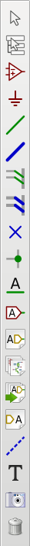
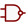

Manuel de référence
Copyright
Ce document est la propriété des contributeurs ci-dessous, copyright © 2010-2015. Vous pouvez le distribuer et/ou le modifier selon les termes de la GNU General Public License (http://www.gnu.org/licenses/gpl.html), version 3 ou ultérieure ou bien selon la licence Creative Commons Attribution (http://creativecommons.org/licenses/by/3.0/), version 3.0 ou ultérieure.
Toutes les marques apparaissant dans ce document appartiennent à leurs propriétaires respectifs.
Contributeurs
Jean-Pierre Charras, Fabrizio Tappero, Marc Berlioux.
Traduction
Marc Berlioux <marc.berlioux@gmail.com>, 2015-2016
Retours
Merci de signaler vos corrections de bugs, suggestions ou nouvelles versions ici :
-
Documentation de KiCad : https://github.com/KiCad/kicad-doc/issues
-
Bugs logiciel KiCad : https://bugs.launchpad.net/kicad
-
Traductions de KiCad : https://github.com/KiCad/kicad-i18n/issues
Date de publication et version du logiciel
Publié le 30 mai 2015.
1. Introduction à Eeschema
1.1. Description
Eeschema est un puissant logiciel de saisie de schémas électroniques faisant partie de KiCad et disponible pour les systèmes d’exploitations suivants :
-
Linux
-
Apple OS X
-
Windows
Les fichiers de Eeschema sont compatibles d’un système d’exploitation à un autre.
Eeschema est une application intégrée à partir de laquelle toutes les fonctions de dessin, de contrôle, de mise en page, de gestion des librairies et d’accès au logiciel de conception de circuit imprimé sont accessibles.
Eeschema est conçu pour fonctionner avec PcbNew, le logiciel d'édition de circuit imprimés de KiCad. Il permet aussi d’exporter des fichiers Netlistes listant toutes les connexions électriques, pour d’autres logiciels.
Eeschema inclue un éditeur de symboles schématiques de composants, qui permet de créer, modifier des composants et de gérer les librairies. Il intègre aussi plusieurs autres fonctions essentielles à la création de schémas électroniques modernes :
-
La vérification des règles électriques ou ERC (Electrical Rules Check), pour le contrôle des connexions manquantes ou incorrectes.
-
L’exportation de fichiers de tracé en plusieurs formats (Postscript, PDF, HPGL, SVG)
-
La génération de listes de composants ou BOM (Bill of Materials) à travers des scripts Python, ce qui permet plusieurs formats configurables.
1.2. Aperçu technique
Eeschema n’est limité que par la mémoire vive disponible. Il n’y a ainsi aucune limitation sur le nombre de composants, de pins, de connexions ou de feuilles schématiques. Dans le cas de schémas à feuilles multiples, leur représentation est hiérarchique.
Eeschema gère les schémas multi-feuilles de types suivants :
-
Schémas à hiérarchie simple (chaque schéma n’est utilisé qu’une fois).
-
Schémas à hiérarchie complexe (certains schémas sont utilisés plus d’une fois, en plusieurs instances).
-
Schémas à hiérarchie plate (les schémas ne font pas explicitement partie d’un schéma maître).
2. Commandes de bases de Eeschema
2.1. Accès aux commandes de Eeschema
Vous pouvez accéder au différentes commandes :
-
En cliquant sur les menus, en haut de la fenêtre.
-
En cliquant sur les boutons de la barre d’outil principale, au sommet de la fenêtre, sous les menus.
-
En cliquant sur les boutons de la barre d’outils à droite de la fenêtre (outils de placement d'éléments).
-
En cliquant sur les boutons de la barre d’outils à gauche de la fenêtre (options d’affichage).
-
En utilisant la souris (commandes complémentaires importantes), notamment au moyen du clic droit sur un élément du schéma, qui affiche un menu contextuel (options de zoom, de dimension de grille et d'édition des éléments).
-
En utilisant les touches de fonctions (touches F1, F2, F3, F4, [Insert], et [Espace]). Généralement, l’appui sur la touche [Escape] annule l’opération en cours, et la touche [Insert] permet la duplication d’un élément venant d'être inséré.
Voici un apercu de l’interface et de l’emplacement des différentes commandes :
2.2. Commandes à la souris
2.2.1. Commandes de base
Bouton gauche
-
Simple clic : affiche les caractéristiques du composant ou du texte sous le curseur, dans la barre d'état, au bas de la fenêtre.
-
Double clic : modifie l'élément (s’il est éditable..), composant ou texte.
Bouton droit
-
Ouvre un menu contextuel, en fonction de l'élément sous le curseur.
2.2.2. Opérations sur les blocs
Vous pouvez déplacer, traîner ou détruire des zones sélectionnées dans tous les modes de Eeschema. La différence entre déplacer (Move) et traîner (Drag) est que les liaisons électriques entre éléments sont conservées lors d’un Drag.
On sélectionne une zone en cliquant du bouton gauche et en maintenant ce bouton appuyé tout en déplaçant la souris.
L’appui sur [Shift], [Ctrl], ou [Shift + Ctrl] pendant la sélection effectue respectivement une copie, un "drag", ou une suppression :
Bouton gauche de la souris |
Déplacer la sélection (Move). |
Shift + bouton gauche de la souris |
Copier la sélection. |
Ctrl + bouton gauche de la souris |
Traîner la sélection (Drag). |
Ctrl + Shift + bouton gauche de la souris |
Supprimer la sélection. |
Lors d’un "drag" ou d’une copie, vous pouvez :
-
Cliquer à nouveau du bouton gauche pour poser les éléments.
-
Cliquer du bouton droit et choisir Annuler Bloc pour annuler l’opération.
En cliquant du bouton droit on peut choisir d’autres actions dans le menu contextuel :
2.3. Raccourcis clavier
-
L’appui sur la touche [?] affiche la liste des raccourcis clavier.
-
Les raccourcis clavier peuvent être modifiés par le menu Préférences, Raccourcis, Editer les raccourcis.
Aperçu de la liste des raccourcis clavier par défaut :
Tous les raccourcis clavier peuvent être redéfinis avec l'Éditeur de raccourcis :
2.4. Sélection de la taille de grille
Dans Eeschema, le curseur se déplace au dessus d’une grille, qui peut être visible ou non. La grille est toujours visible dans le gestionnaire de librairie.
Vous pouvez changer la taille de la grille par le menu contextuel ou par le menu Préférences,Options de l'éditeur de schématique.
La taille par défaut de la grille est de 50 mils (0.050") soit 1.27 mm.
C’est la dimension préférée pour le placement des composants et des fils dans le schéma, mais aussi pour le placement des pins pendant le dessin d’un symbole de composant dans l'éditeur de composants.
On peut aussi travailler avec une dimension de grille plus petite comme 25 mils ou 10 mils. C’est uniquement lors du dessin des boîtiers de composants ou pour placer des textes et des commentaires, et non pour placer des pins ou des fils.
2.5. Sélection du Zoom
Pour changer le niveau du zoom :
-
Cliquez du bouton droit pour ouvrir le menu contextuel et choisissez la valeur de zoom désirée.
-
Ou utilisez les touches de fonctions :
-
F1: Zoom avant
-
F2: Zoom arrière
-
F4 ou cliquez simplement sur le bouton du milieu (sans bouger la souris) : Centrer la vue autour de la position du pointeur de la souris
-
-
Zoom fenêtre :
-
Molette de la souris : Zoom avant/arrière
-
Molette de la souris, touche [Shift] enfoncée : Déplacement haut/bas
-
Molette de la souris, touche [Ctrl] enfoncée : Déplacement droite/gauche
-
2.6. Affichage des coordonnées du curseur
L’unité d’affichage est en inches ou en millimètres. Toutefois, Eeschema travaille toujours en interne en unités de 0.001 inch (mil/thou).
Les informations suivantes sont affichées en bas et à droite de la fenêtre :
-
Le facteur de Zoom
-
La position absolue du curseur (X Y)
-
La position relative du curseur (dx dy)
Les coordonnées relatives sont remises à zéro par un appui sur la barre d’espace du clavier. C’est très utile pour faire des mesures entre deux points.

2.7. Barre de menu
La barre de menus permet l’ouverture et la sauvegarde de schémas, la configuration du programme et l’affichage de la documentation.
2.8. Barre d’outils supérieure
Cette barre d’outils donne accès aux principales fonctions de Eeschema.
Si Eeschema est lancé tout seul (mode standalone), et non par le gestionnaire de projets, voici les boutons disponibles :

Si Eeschema est lancé par le gestionnaire de projets (KiCad), voici les boutons disponibles :

Les outils pour créer un projet ne sont pas présents, car ils sont dans le Gestionnaire de Projets.
|
Nouveau Projet Schématique. Créer un nouveau schéma (seulement en mode standalone). |
|
Ouvrir un Projet Schématique (seulement en mode standalone). |
|
Sauver le Projet Schématique (toute la hiérarchie). |
|
Ajustage des options de la page, taille et contenu du cartouche. |
|
Impression des feuilles de schémas. |
|
Suppression des éléments sélectionnés, pendant le déplacement d’un bloc. |
|
Copie des éléments sélectionnés, dans le presse-papier. |
|
Copie des éléments sauvegardés, depuis le presse-papier dans la feuille courante. |
|
Défaire la dernière édition (Ctrl+Z). Annule les dernières modifications (jusqu'à 10). |
|
Refaire la dernière commande (Ctrl+Y). Rétablit les dernières modifications (jusqu'à 10). |
|
Recherche de composants et de textes, dans le schéma. |
|
Chercher et remplacer un texte, dans le schéma. |
|
Zoom + (avant), Zoom - (arrière). |
|
Rafraîchir l'écran, Zoom automatique. |
|
Navigateur de hiérarchie. |
|
Quitter la sous-feuille, et remonter dans la hiérarchie. |
|
Éditeur de librairies, lance l'éditeur de composants. |
|
Visualisateur de librairies, et de composants (Viewlib). |
|
Annotation des composants de la schématique. |
|
Exécute le test des règles électriques (ERC), vérifie les connexions électriques. |
|
Génération de la Netliste (Pcbnew, SPICE, et autres formats). |
|
Génération de la liste des composants, ou BOM (Bill Of Materials). |
|
Éditeur d’empreintes. |
|
Lancer CvPcb, association composants et empreintes. |
|
Lancer Pcbnew, outil de conception de circuits imprimés. |
|
Importer le fichier d’association composants/empreintes (fichier .cmp créé par CvPcb). |
2.9. Barre d’outils latérale droite
Cette barre d’outils contient les outils pour :
-
Placer des composants, des fils, des bus, des jonctions, des étiquettes (labels), des textes, etc…
-
Créer des sous-feuilles hiérarchiques et des symboles de connexion.
 |
|
Annule la commande active, quitte l’outil en cours. |
|
Naviguer dans la hiérarchie : cet outil permet d’ouvrir les sous-feuilles de la schématique courante (clic sur le symbole de cette sous-feuille), ou de remonter dans la hiérarchie (clic dans une zone libre du schéma). |
|
|
Placer un composant : affiche le sélecteur de composants. |
|
|
Placer un symbole de type power : ouvre le sélecteur de symboles d’alimentation. |
|
|
Placer un fil. |
|
|
Placer un bus. |
|
|
Placer une entrée de bus (type fil vers bus). Ces éléments sont seulement graphiques et ne créent pas de liaisons électriques, ils ne doivent donc pas être utilisés pour relier des fils ensemble. |
|
|
Placer une entrée de bus (type bus vers bus). |
|
|
Placer un symbole de non connexion. Pour marquer les pins de composants qui sont volontairement non connectées. Utile pour la vérification des règles électriques (ERC). |
|
|
Placer une jonction. Elles sont placées pour relier deux fils qui se croisent , ou un fil et une pin, quand cela peut être ambigu. |
|
|
Placer un nom de net label local. Deux fils avec le même label, dans la même feuille schématique, seront connectés. Pour des connexions entre différentes feuilles, utiliser des labels globaux, ou hiérarchiques. |
|
|
Placer un label global. Tous les labels globaux portant le même nom seront connectés, dans toutes les feuilles de la hiérarchie. |
|
|
Placer un label hiérarchique. Permet d'établir une connexion entre une feuille et la feuille parente qui la contient. |
|
|
Créer une feuille de hiérarchie. Vous devrez donner un nom à cette sous-feuille. |
|
|
Placer une pin hiérarchique importée à partir du label hiérarchique correspondant. Ces labels hiérarchiques doivent déjà être en place dans la sous-feuille. Équivalentes à des pins de composants, elles doivent être reliées par des fils. |
|
|
Addition de pins de hiérarchie dans les feuilles. Elles sont placées par leurs noms et n’ont pas besoin d’exister déjà dans la sous-feuille. |
|
|
Placer lignes ou polygones graphiques. Seulement graphiques, ne relient rien électriquement. |
|
|
Placer des textes. Graphiques uniquement aussi. |
|
|
Ajouter une image bitmap. |
|
|
Suppression d'éléments. Supprime les éléments sélectionnés. Si plusieurs éléments superposés sont sélectionnés, la priorité est donnée au plus petit (par priorité décroissante : jonction, "Non Connexion", fil, bus, text, composant). Ceci s’applique aussi aux feuilles hiérarchiques. Note : le bouton "Défaire" de la barre d’outils principale vous permet d’annuler les dernières suppressions. |
2.10. Barre d’outils latérale gauche
Cette barre d’outils permet de gérer les options d’affichage :
|
Afficher / Cacher la grille. |
|
Unités en pouces (inches). |
|
Unités en millimètres. |
|
Changer la forme du curseur. |
|
Force l’affichage des pins invisibles. |
|
Autoriser / Interdire le tracé de fils ou de bus non orthogonaux. |
2.11. Menus contextuels et édition rapide
Un clic droit ouvre un menu contextuel pour l'élément sélectionné ou survolé : ce menu permet d’ajuster :
-
Le facteur de Zoom.
-
La taille de grille.
-
Les paramètres couramment édités de l'élément sélectionné.
Menu contextuel en dehors d’un élément.
Édition d’un label
Édition d’un composant
3. Barre de menus
3.1. Menu Fichiers
Nouveau Projet Schématique |
Efface le schéma courant et débute un nouveau fichier |
Ouvrir un Projet Schématique |
Charge une schématique |
Ouvrir Récent |
Ouvre la liste des fichiers récemment ouverts |
Ajouter feuille de schéma |
Insérer le contenu d’une autre feuille dans la feuille courante |
Sauver le Projet Schématique |
Enregistrer la feuille courante et toute sa hiérarchie. |
Sauver la feuille courante seule |
Enregistrer la feuille courante, mais pas les autres de la hiérarchie. |
Sauver la feuille courante sous.. |
Enregistrer la feuille courante avec un nouveau nom. |
Ajustage Opt Page |
Ajustage des options de la page, taille et contenu du cartouche. |
Imprimer |
Imprimer la schématique hiérarchique (Voir chapitre ITracer / Imprimer). |
Tracer |
Exporter au format PDF, PostScript, HPGL or SVG (Voir chapitre Tracer / Imprimer). |
Fermer |
Quitter sans sauvegarder. |
3.2. Menu Préférences
3.2.1. Préférences
Librairies de Composants |
Sélection des librairies et des chemins de recherche de librairies. |
Sélection Couleurs des Éléments |
Réglages des couleurs de l’affichage, de tracé et d’impression. |
Options de l'Éditeur de schématique |
Options générales (unités, tailles de grille, noms de champs, etc…). |
Langue |
Sélection de la langue de l’interface. |
Raccourcis |
Sous-menu des raccourcis (liste, édition, export, import). |
Sauver Préférences |
Enregistrer les préférences dans un fichier de projet .pro. |
Charger Préférences |
Charger les préférences du projet depuis un fichier .pro. |
3.2.2. Préférences / Librairies de Composants
Cette boite de dialogue est utilisée pour configurer les librairies de composants et les chemins de recherche des librairies. Ces réglages sont enregistrés dans un fichier .pro. Vous pouvez avoir différents fichiers de configuration dans différents dossiers.
Eeschema recherche, dans l’ordre :
-
Le fichier de configuration (nom_du_projet.pro) dans le dossier courant. Le fichier kicad.pro dans le répertoire de KiCad. Ce fichier sera donc le fichier de configuration par défaut. En l’absence de ces fichiers, il chargera des valeurs par défaut. À charge pour vous d’ajouter vos librairies à la liste, et d’enregistrer la configuration dans un fichier .pro.
La case Vérifier les conflits entre cache et librairie au chargement du schéma détermine le comportement du restaurateur de cache de librairies. Voir Réparer le Cache de Composants pour plus d’informations.
3.2.3. Préférences / Sélection Couleurs des Éléments
Palette des couleurs utilisées pour les différents éléments graphiques, ainsi que pour la couleur de fond de la zone d'édition (noir ou blanc).
3.2.4. Préférences / Options de l'Éditeur de Schématique
Unités de mesure: |
Choisissez les unités des coordonnées de l’affichage et du curseur (inches ou millimètres). |
Dim Grille: |
Sélection de la taille de grille. Il est recommandé de travailler avec la taille de grille normale (0.050 inches ou 1,27 mm). Les tailles de grille plus petites sont surtout utilisées pour le dessin de composant. |
Épaisseur bus par défaut: |
Taille du pinceau pour le tracé des bus. |
Épaisseur ligne par défaut: |
Taille du pinceau pour le tracé des objets qui n’ont pas une taille définie. |
Taille des textes par défaut |
Dimension des textes lors de l’ajout de textes et de labels |
Pas horizontal pour la répétition d'éléments |
Décalage sur l’axe X lors de la duplication d'éléments (valeur normale 0) (après le placement d’un élément comme un composant, un fil ou un label, une copie peut être faite par l’appui sur la touche Insert) |
Pas vertical pour la répétition d'éléments |
Décalage sur l’axe Y lors de la duplication d'éléments (valeur normale 0,100 inches, soit 2,54mm) |
Incrémentation des labels en répétition |
Incrémentation de la valeur des labels lors de la duplication de textes se terminant par un nombre, par exemple les numéros de membres de bus (habituellement 1 ou -1). |
Intervalle de sauvegarde automatique: |
Temps en minutes entre deux sauvegardes. |
Notation pour part id: |
Style du suffixe utilisé pour annoter les unités de composants (U1A, U1.A, U1-1, etc…) |
Afficher la grille: |
Case cochée : la grille est affichée. |
Afficher les pins invisibles: |
Case cochée : affiche les pins invisibles (ou cachées), le plus souvent des pins d’alimentation. |
Centrer et déplacer le curseur en zoomant: |
Lors d’un zoom, centrer la vue sur la position du curseur. |
Utiliser le bouton du milieu de la souris pour recadrer l’affichage |
Case cochée : il est possible de déplacer la feuille avec le bouton du milieu de la souris. |
Limiter le panning à la taille du "scroll" maximum |
Case cochée : le bouton du milieu de la souris ne peut déplacer la feuille en dehors de la zone affichée. |
Pan lors du déplacement d’objets |
Case cochée : déplace automatiquement la vue de la feuille quand le curseur dépasse le bord de la fenêtre d'édition, pendant le dessin ou les déplacements. |
Limiter orientation bus et fils à H et V |
Case cochée : les bus et les fils ne peuvent être qu’horizontaux ou verticaux Dans le cas contraire, les bus et fils peuvent être placés dans n’importe quelle orientation. |
Afficher limites de page |
Case cochée : montre les limites de la page à l'écran. |
3.2.5. Préférences / Langue
Utilisez la langue par défaut du système. Les autres choix de langue sont là principalement pour le développement.
3.3. Menu Aide
Accédez à l’aide en ligne (ce document) pour un manuel détaillé de KiCad. Utilisez les informations présentes dans «Copier infos de version» quand vous soumettez un rapport de bug, pour identifier votre version et votre système.
4. Barre d’outils principale
4.1. Gestion des feuilles schématiques
L’icône Ajustage des options de la page
 , vous permet de régler
la taille de la feuille et les textes contenus dans le cartouche.
, vous permet de régler
la taille de la feuille et les textes contenus dans le cartouche.
Le nombre de feuilles, numéro de feuille, sont mis à jour automatiquement. La date ne sera pas changée automatiquement, mais vous pouvez la fixer à aujourd’hui en cliquant sur le bouton "←".
4.2. Options de l'éditeur de schématique
4.2.1. Options générales
4.2.2. Noms des Champs Modèles
Vous pouvez définir des champs personnalisés qui existeront par défaut pour chaque composant (même s’ils sont laissés vides).
4.3. Outil de recherche
L’icône
 , vous affichera la fenêtre de
l’outil de recherche.
, vous affichera la fenêtre de
l’outil de recherche.
Vous pouvez rechercher une référence, une valeur, ou du texte, dans la feuille courante ou dans l’ensemble de la hiérarchie. Une fois trouvé, le curseur sera positionné sur l'élément recherché dans la sous-feuille concernée.
4.4. Outil de Netliste
L’icône
 ouvre l’outil de
génération de netlistes.
ouvre l’outil de
génération de netlistes.
Les fichiers netlistes générés décrivent toutes les connexions entre éléments dans l’entière hiérarchie.
Dans une hiérarchie multi-feuilles, chaque label local n’est visible que dans la feuille à laquelle il appartient. Ainsi, le label TOTO de la feuille 3 est différent du label TOTO de la feuille 5 (si aucune connexion n’a été introduite volontairement pour les relier). Ceci est du au fait que le numéro de la feuille est associé en interne aux labels locaux.
Note 1 :
La longueur des labels n’a aucune limitation dans Eeschema, mais les logiciels exploitant les netlistes générées peuvent, eux, avoir certaines limitations à ce sujet.
Note 2 :
Évitez les espaces dans les noms de labels, car ils apparaîtront comme des mots séparés. Ce n’est pas une limitation de Eeschema, mais il peut y en avoir dans certains formats de netlistes qui considèrent que les noms de labels sont dépourvus d’espaces.
Options :
Format par défaut :
Cochez la case pour choisir Pcbnew comme le format par défaut.
D’autres formats de netlistes peuvent être générés :
-
Orcad PCB2
-
CadStar
-
Spice, pour les simulateurs
Des plugins externes peuvent également être ajoutés pour de nouveaux formats.
4.5. Outil d’annotation
L’icône donne accès à l’outil d’annotation. Cet outil effectue le nommage automatique des références des composants du schéma.
Pour des composants multi-unités (comme par exemple le 7400 qui contient 4 portes), un suffixe d’unité sera attribué (ainsi notre 7400 désigné par la référence U3 sera divisé en quatre unités référencées U3A, U3B, U3C et U3D).
Vous pouvez choisir d’annoter tous les composants, ou seulement les nouveaux, comme ceux qui ne sont pas encore annotés.
Portée
Utiliser la schématique entière. Toutes les feuilles seront ré-annotées (c’est option habituelle).
Utiliser la feuille active uniquement. Seule la feuille courante sera ré-annotée (cette option sera utilisée dans des cas particuliers, par exemple pour évaluer le nombre de résistances de la feuille courante).
Garder l’annotation existante. Annotation conditionnelle, seuls les nouveaux composants seront annotés (option habituelle).
Supprimer l’annotation existante. Annotation inconditionnelle, tous les composants seront ré-annotés (cette option sera utilisée quand il y a un risque de doublons dans les références).
Reset, mais ne pas échanger les unités déjà numérotées des boitiers multi-unités. Cette option conserve les groupes de multi-unités (ex. : U2A, U2B) lors de la ré-annotation.
Ordre d’annotation
Choisit dans quelle direction seront numérotés les composants.
Choix de l’annotation
Sélectionne la méthode de numérotation pour les schémas multi-feuilles.
4.6. Outil de vérification des règles électriques
L’icône
 donne accès à l’outil de
vérification des règles électriques (ERC).
donne accès à l’outil de
vérification des règles électriques (ERC).
Cet outil effectue la vérification du schéma, et est particulièrement utile pour détecter des connexions oubliées ou des incohérences.
Une fois que vous avez exécuté l’ERC, Eeschema place des marqueurs pour mettre en évidence les problèmes. Le diagnostic peut alors être donné par un clic gauche sur le marqueur. Un fichier de rapport d’erreurs peut également être généré.
4.6.1. Fenêtre principale de l’ERC
Les erreurs sont affichées dans la fenêtre du vérificateur des règles électriques :
-
Total : nombre total d’erreurs et avertissements.
-
Erreurs : nombre d’erreurs.
-
Warnings : nombre d’avertissements.
Options :
-
Créer fichier rapport ERC : cochez la case pour la création d’un fichier de rapport d’erreurs.
Commandes :
-
Effacer marqueurs : enlève tous les marqueurs d’erreurs et avertissements du schéma.
-
Exécuter : lance la vérification.
-
Fermer : ferme la fenêtre de l’ERC.
Note :
-
En cliquant sur une erreur, vous êtes emmenés au marqueur correspondant sur le schéma.
4.6.2. Options de l’ERC
Cet onglet vous permet de fixer les règles de connexion entre pins. Vous pouvez choisir parmi trois options pour chaque cas :
-
Pas d’erreur (Vert)
-
Avertissement (W jaune)
-
Erreur (E rouge)
Chaque carré de la matrice peut être modifié en cliquant une ou plusieurs fois dessus.
4.7. Outil de Liste de Matériel
L’icône
 donne accès à l’outil de
création de la liste de matériel, ou BOM (Bill Of Material). Cet outil
génère un fichier contenant la liste des composants et/ou les connexions
hiérarchiques (labels globaux).
donne accès à l’outil de
création de la liste de matériel, ou BOM (Bill Of Material). Cet outil
génère un fichier contenant la liste des composants et/ou les connexions
hiérarchiques (labels globaux).
Le générateur de BOM utilise des plugins externes, en général sous la forme de feuilles de styles XSLT ou de scripts Python. Certains sont fournis, et sont disponibles dans le répertoire d’installation de KiCad. (Linux : /usr/lib/kicad/plugins).
Quelques champs de composants utiles à utiliser pour le BOM :
-
Valeur : nom unique pour chaque composant utilisé.
-
Empreinte : entrée soit manuellement, soit par rétro-annotation (voir ci-dessous).
-
Champ 1 : nom du fabricant.
-
Champ 2 : référence fabricant.
-
Champ 3 : référence distributeur.
Exemple :
4.8. Outil de rétro-annotation des empreintes associées
4.8.1. Accès :
L’icône
 donne accès à l’outil de rétro-annotation.
donne accès à l’outil de rétro-annotation.
Cet outil permet de rétro-importer les noms des empreintes choisies dans Pcbnew dans les champs empreintes de Eeschema.
5. Création et édition de schémas
5.1. Introduction
Un schéma peut être représenté sur une seule feuille, mais, s’il est assez grand, il lui faudra plusieurs feuilles.
Un schéma représenté sur plusieurs feuilles est un schéma hiérarchique, et toutes ses feuilles (chacune représentée par son propre fichier) constituent un projet Eeschema. La manipulation des schémas hiérarchiques sera décrite au chapitre Schématiques hiérarchiques.
5.2. Généralités
Un schéma conçu avec Eeschema est plus que la simple représentation graphique d’un dispositif électronique. Il est normalement le point d’entrée d’une chaîne de développement qui permet de :
-
Valider un ensemble de règles (Vérification des règles électriques (ERC)) pour détecter les erreurs et omissions.
-
Générer automatiquement une liste de composants (BOM).
-
Générer une netliste pour des logiciels de simulation, comme SPICE.
-
Générer une netliste pour la transférer à un logiciel de dessin de circuit imprimé.
Un schéma se compose principalement de composants, de fils, d'étiquettes (labels), de jonctions, de bus et de sources d’alimentation. Pour plus de clarté dans le schéma, vous pouvez placer des éléments purement graphiques comme des entrées de bus, des commentaires ou des polygones graphiques.
5.3. Chaîne de développement

Les composants sont ajoutés à la schématique à partir de bibliothèques (librairies) de composants. Quand le schéma est fait, une liste d’interconnexions (netliste) est générée, qui est ensuite utilisée pour importer la définition des connexions et des empreintes dans PcbNew.
5.4. Placement et édition de composants
5.4.1. Rechercher et placer un composant
Pour placer un composant dans votre schéma, vous pouvez utiliser l’icône
 . Une boîte de
dialogue vous permet de taper le nom du composant à charger.
. Une boîte de
dialogue vous permet de taper le nom du composant à charger.
La boîte de dialogue Sélection Composant va filtrer les composants par nom, mots-clés, ou description selon ce que vous tapez dans le champ de recherche du filtre.
Avant de placer le composant dans le schéma, vous pouvez le faire pivoter, le renverser (miroir haut-bas ou droite-gauche), ou modifier ses champs, soit en utilisant les raccourcis clavier soit par le menu contextuel (clic-droit). Cela pourra également être fait après le placement, de la même manière.
Voici un composant lors de son placement :
5.4.2. Alimentations
Un symbole d’alimentation est un composant (les symboles d’alimentation sont
regroupés dans la librairie "power"), afin qu’ils puissent être placés en
utilisant le sélecteur de composants. Cependant, comme les placements
d’alimentations sont fréquents, on utilisera l’outil
 . Cet outil est le même que
pour le placement de composants, sauf que la recherche se fait directement
dans la librairie «power».
. Cet outil est le même que
pour le placement de composants, sauf que la recherche se fait directement
dans la librairie «power».
5.4.3. Édition et modification de composants (déjà placés)
Il y a deux façons d'éditer un composant :
-
Modifier le composant lui-même : position, orientation, sélection d’unité pour un composant multi-unités.
-
Modifier un de ses champs : référence, valeur, empreinte, etc…
Lorsqu’un composant vient d'être placé, vous pouvez avoir à modifier sa valeur (en particulier pour les résistances, condensateurs, etc…), mais il est inutile de lui assigner un numéro de référence tout de suite, ni de sélectionner l’unité (sauf pour les composants avec des unités verrouillées, que vous aurez à attribuer manuellement). Ceci peut être fait automatiquement par l’outil d’annotation.
Modification de composant
Pour modifier une caractéristique d’un composant, placez le curseur sur le composant, puis, au choix :
-
Double-cliquez sur le composant pour ouvrir la fenêtre d'édition complète.
-
Faites un clic droit pour ouvrir le menu contextuel et choisissez l’une des commandes : Déplacer, Orienter, Éditer, Supprimer, etc…
Édition des champs du composant
Vous pouvez modifier la référence, la valeur, la position, l’orientation, la taille du texte et la visibilité des champs :
-
Double-cliquez sur le champ à modifier.
-
Faites un clic droit pour ouvrir le menu contextuel et choisissez l’une des commandes : Déplacer, Orienter, Éditer, Supprimer, etc…
Pour plus d’options, ou pour créer de nouveaux champs, double-cliquez sur le composant pour ouvrir la fenêtre d'édition complète des propriétés du composant.
Chaque champ peut être visible ou caché, et affiché soit horizontalement, soit verticalement. La position affichée est toujours indiquée pour le composant normalement affiché (pas de rotation ou de mise en miroir), et est relative au point d’ancrage du composant.
Le bouton "Remettre aux valeurs en Librairie" ramène le composant à son orientation originale, et réinitialise les options, la taille et la position de chaque champ. Les champs textes ne sont cependant pas modifiés, car cela pourrait casser la schématique.
5.5. Fils, Bus, Labels, Alimentations
5.5.1. Introduction
Tous ces éléments peuvent être placés à partir des outils de la barre latérale droite
Ces éléments peuvent être des :
-
Fils : connexions entre composants
-
Bus : pour relier graphiquement des labels de bus
-
Polygones : pour la présentation graphique.
-
Jonctions : pour créer des connexions au croisement de fils ou de bus.
-
Entrées de Bus : pour montrer les connexions entre fils et bus. Seulement pour l’aspect graphique !
-
Labels: pour étiqueter ou établir des connexions.
-
Labels globaux: pour établir des connexions entre feuilles.
-
Textes: pour ajouter des commentaires ou des notes.
-
Symboles de Non-Connexion: pour signaler une pin de composant qui ne sera pas utilisée.
-
Feuilles Hiérarchiques, et leurs pins de connexions.
5.5.2. Connexions (Fils et Labels)
Il y a deux moyens d'établir des connexions :
-
Fils de pin à pin.
-
Labels.
La figure ci-dessous montre les deux méthodes :

Note 1 :
Le point de "contact" d’un label est le coin inférieur gauche de la première lettre de l'étiquette. Ce point est affiché avec un petit carré lorsqu’il n’est pas connecté.
Ce point doit donc être en contact avec le fil, ou être superposé à l’extrémité d’une pin pour que le label soit considéré comme connecté.
Note 2 :
Pour établir une connexion, un segment de fil doit être connecté par ses extrémités à un autre segment ou à une pin de composant.
Si il y a chevauchement (si un fil survole une pin sans être connecté à son extrémité), il n’y a pas de connexion.
Note 3 :
Les fils qui se croisent ne sont pas implicitement connectés. Il est nécessaire de les joindre avec un point de jonction si une connexion est souhaitée.
La figure précédente montre un cas de connexions utilisant des symboles de jonction (fils reliés entre eux, DB25FEMALE pins 19, 20, 21, 22).
Note 4 :
Si deux labels différents sont placés sur le même fil, ils sont reliés entre eux et deviennent équivalents. Et tous les éléments reliés à l’un ou l’autre de ces labels seront connectés entre eux.
5.5.3. Connexions (Bus)
Dans le schéma ci-dessous, de nombreuses pins sont connectées à des bus.
Membres d’un bus
Du point de vue schématique, un bus est une collection de signaux, commençant par un préfixe commun, et se terminant par un numéro. Par exemple, PCA0, PCA1, PCA2 et sont des membres du bus PCA.
Le bus complet est nommé PCA[N..m], où N et m sont le premier et le dernier numéro des fils de ce bus. Ainsi, si le bus PCA compte 20 membres, de 0 à 19, le bus complet sera noté PCA[0..19]. Une collection de signaux comme PCA0, PCA1, PCA2, WRITE, READ ne peut être contenue dans un bus.
Connexions entre membres de bus
Les pins connectées entre les membres d’un même bus doivent être reliées par des labels. Il est impossible de connecter une pin directement à un bus ; ce type de connexion sera ignoré par Eeschema.
Dans l’exemple ci-dessus, les connexions sont faites par des labels placés sur les fils connectés aux pins. Les entrées de bus (segments de fil à 45 degrés) sont purement décoratifs, et ne sont pas nécessaires pour établir des connexions logiques.
En pratique, en utilisant la commande de répétition (touche Insert), les connexions peuvent être très vite faites de la façon suivante, si les pins de composants sont alignées dans l’ordre croissant (un cas fréquent sur des composants tels que des mémoires, microprocesseurs, etc…) :
-
Placez le premier label (par exemple PCA0).
-
Utilisez la commande de répétition autant de fois que nécessaire pour placer les autres membres. Eeschema créera automatiquement les labels suivants (PCA1, PCA2 …) alignés verticalement, théoriquement sur la position des autres pins.
-
Dessinez le fil sous le premier label. Ensuite, utilisez la commande de répétition pour placer les autres fils sous les autres labels.
-
Au besoin, placez les entrées de bus de la même façon (placez la première entrée, puis utilisez la commande de répétition).
|
Note
|
Dans le menu Préférences / Options de l'éditeur de schématique, vous pouvez définir les paramètres de répétition :
|
Connexions globales entre les bus
Vous pouvez avoir besoin de mettre des connexions entre des bus, pour, par exemple, relier deux bus ayant des noms différents, ou dans le cas d’une hiérarchie, pour créer des liens entre les différentes feuilles. Dans ce cas, effectuez ces connexions de la manière suivante :

Les bus PCA [0..15], ADR [0..7] et BUS [5..10] sont reliés entre eux (remarquez la jonction placée ici pour que le fil de bus vertical rejoigne le milieu du segment du bus horizontal).
Plus précisément, les éléments correspondants sont reliés entre eux: PCA0, ADR0 sont connectés, (de même que PCA1 et ADR1, …, PCA7 et ADR7).
De la même manière, PCA5, BUS5 et ADR5 sont connectés (tout comme PCA6, BUS6 et ADR6 et PCA7, BUS7 et ADR7).
PCA8 et BUS8 sont aussi connectés (tout comme PCA9 et BUS9, PCA10 et BUS10)
5.5.4. Connexion des sources d’alimentation
Lorsque les pins d’alimentation des composants sont visibles, elles doivent être connectées, comme pour tout autre signal.
Les composants tels que les portes logiques et les bascules peuvent avoir des pins d’alimentation invisibles. Des précautions doivent être prises avec ceux-ci parce que :
-
Vous ne pouvez pas connecter de fils, en raison de leur invisibilité.
-
Vous ne connaissez pas leurs noms.
Et de plus, ce serait une mauvaise idée de les rendre visibles et de les relier comme les autres pins, parce que le schéma deviendrait illisible et non conforme aux conventions habituelles.
|
Note
|
Si vous voulez forcer l’affichage de ces pins d’alimentation invisibles,
vous devez cocher l’option «Afficher les pins invisibles» dans la boîte de
dialogue du menu Préférences / Options de l'éditeur de schématique, ou
cliquer sur l’icône
|
Eeschema connecte automatiquement les pins d’alimentation invisibles de même nom, à la source d’alimentation portant ce nom. Il peut être nécessaire de relier des points d’alimentation de noms différents (par exemple, "GND" dans les composants TTL et "VSS" dans les composants MOS) ; utilisez les symboles d’alimentation pour cela.
Il est déconseillé d’utiliser des labels pour le raccordement aux alimentations. Ceux-ci ne disposent que d’une portée de connexion "locale", et ne relieraient pas les pins d’alimentation invisibles.
La figure ci-dessous montre un exemple de connexion de sources d’alimentation.

Dans cet exemple, la masse (GND) est connectée à la source d’alimentation VSS, et la source d’alimentation VCC est connectée à VDD.
Deux symboles PWR_FLAG y sont visibles. Ils indiquent que les deux sources d’alimentation VCC et GND sont vraiment reliées à une source d’alimentation. Sans ces deux drapeaux, l’outil ERC diagnostiquerait : Warning Avertissement : port d’alimentation non connecté.
Tous ces symboles de composants font partie de la librairie «power».
5.5.5. Symboles de "Non-Connexion"
Ces symboles sont très utiles pour éviter d’avoir des avertissements indésirables dans l’ERC. La vérification des règles électriques s’assurant qu’aucune connexion n’a été oubliée.
Si des pins doivent vraiment rester en l’air, il est nécessaire de placer un
drapeau, symbole de "Non Connexion" (outil :
 ) sur ces broches. Ces
symboles n’ont aucune incidence sur la génération des netlistes.
) sur ces broches. Ces
symboles n’ont aucune incidence sur la génération des netlistes.
5.6. Compléments Graphiques
5.6.1. Textes et Commentaires
Il peut être utile, pour la compréhension le schéma, de placer des éléments
tels que des textes, des notes, ou des cadres. Les outils Texte :
 et Polygones :
et Polygones :
 ) sont destinés à cet usage,
contrairement aux labels et aux fils, qui sont des éléments de connexion.
) sont destinés à cet usage,
contrairement aux labels et aux fils, qui sont des éléments de connexion.
Ici, un exemple de cadre avec un texte de commentaire :

5.6.2. Cartouche
On peut modifier le cartouche et son contenu en cliquant sur l’outil
 .
.

Le nombre et le numéro de feuille sont automatiquement mis à jour.
5.7. Restauration du cache des composants
Par défaut, EESchema va chercher les symboles de composants des librairies disponibles dans les chemins et emplacements configurés. Cela peut causer un problème lors du chargement d’un projet très ancien : si les symboles de la librairie ont changé depuis qu’ils ont été utilisés dans le projet, ils seraient remplacés automatiquement avec leurs nouvelles versions. Les nouvelles versions peuvent ne pas s’insérer correctement, ou être orientées différemment, ce qui conduit à un schéma cassé.
Cependant, quand un projet est enregistré, une librairie de sauvegarde (ou cache) est enregistrée avec lui. Cela permet au projet d'être distribué sans les librairies complètes. Si vous chargez un projet où les symboles sont présents à la fois dans ce fichier cache et dans les librairies du système, Eeschema va scanner les bibliothèques pour trouver d'éventuels conflits. Les conflits trouvés seront affichés dans la fenêtre suivante :

Vous pouvez voir dans cet exemple que le projet utilisait initialement une diode avec la cathode vers le haut, mais la librairie en contient maintenant une avec la cathode vers le bas. Ce changement pourrait ruiner le projet ! Un appui sur OK, provoquera la sauvegarde de l’ancien symbole dans une librairie spéciale «rescue», et tous les composants utilisant ce symbole seront renommés pour éviter les conflits de noms.
Si vous appuyez sur Annuler, aucune sauvegarde ne sera effectuée, et donc Eeschema va, par défaut, charger tous les nouveaux composants. Tant qu’aucun changement n’a été effectué, vous pouvez toujours revenir en arrière et relancer la restauration du cache : choisissez "Sauver anciens composants" du menu Outils pour faire apparaître la fenêtre à nouveau.
Si vous préférez ne plus voir cette boîte de dialogue, vous pouvez appuyer sur "Ne plus afficher". La valeur par défaut est de ne rien faire et de permettre aux nouveaux composants d'être chargés. Cette option peut être modifiée dans les Préférences / Librairies de composants.
6. Schématiques hiérarchiques
6.1. Introduction
Une représentation hiérarchique est généralement une bonne solution pour des projets dépassant quelques feuilles. Si vous voulez gérer ce type de projet, il vous faudra :
-
Utiliser de grande feuilles, ce qui pourrait conduire à des problèmes d’impression ou de manipulation.
-
Utiliser plusieurs feuilles, ce qui vous amène à une structure hiérarchique.
La schématique complète consiste alors en une feuille principale, appelée feuille racine, et des sous-feuilles constituant la hiérarchie. En outre, une habile subdivision du schéma en plusieurs feuilles augmentera souvent sa lisibilité.
À partir de la feuille racine, vous pouvez accéder à toutes les
sous-feuilles. La gestion d’une schématique hiérarchique est très facile
avec Eeschema, grâce à son "Navigateur de Hiérarchie" accessible par l’icône
 de la barre
d’outils supérieure.
de la barre
d’outils supérieure.
Deux sortes de hiérarchies peuvent cohabiter : la première est celle qui vient d'être évoquée, et qui est d’usage courant. La seconde consiste en la création de composants en librairie qui ressemblent à des composants ordinaires, mais qui correspondent en fait à un schéma décrivant leur structure interne.
Le second type est utilisé pour concevoir des circuits intégrés, car dans ce cas vous devez utiliser des librairies de fonctions dans le schéma que vous êtes en train de dessiner.
Eeschema ne gère pas pour l’instant ce deuxième type.
Une hiérarchie peut être :
-
simple : une feuille donnée n’est utilisée qu’une seule fois.
-
complexe : une feuille donnée sera utilisée plusieurs fois (instances multiples).
-
à plat : c’est un hiérarchie simple, mais les liaisons entre feuilles ne sont pas dessinées.
Eeschema est capable de gérer ces différentes hiérarchies.
La création d’une schématique hiérarchique est facile, la hiérarchie étant manipulée à partir de la feuille racine, comme si vous n’aviez qu’un seul schéma.
Les deux étapes importantes à comprendre sont :
-
Comment créer une sous-feuille.
-
Comment établir des connexions électriques entre les sous-feuilles.
6.2. Navigation dans la hiérarchie
La navigation parmi les sous-feuilles est très facile, grâce à l’outil de
navigation accessible par le bouton
 de la barre
d’outils supérieure.
de la barre
d’outils supérieure.

On peut atteindre chaque feuille en double-cliquant sur son nom. Vous pouvez aussi entrer rapidement dans une feuille, depuis sa feuille parente, en faisant un clic droit dessus, puis Entrer dans feuille.
Vous pouvez accéder rapidement à la feuille racine, ou à une des
sous-feuilles grâce à l’outil
 de la
barre latérale droite. Après que cet outil ait été sélectionné :
de la
barre latérale droite. Après que cet outil ait été sélectionné :
-
Cliquez sur un nom de feuille pour la sélectionner.
-
Cliquez ailleurs sur la feuille pour afficher la feuille racine, ou pour remonter dans la hiérarchie.
6.3. Labels locaux, hiérarchiques et globaux
6.3.1. Propriétés
Les labels locaux, outil
 , relient des
signaux uniquement à l’intérieur de la même feuille. Les labels
hiérarchiques, outil
,
relient des signaux uniquement à l’intérieur d’une feuille ou à une pin
hiérarchique de sa feuille parente.
, relient des
signaux uniquement à l’intérieur de la même feuille. Les labels
hiérarchiques, outil
,
relient des signaux uniquement à l’intérieur d’une feuille ou à une pin
hiérarchique de sa feuille parente.
Les labels globaux, outil
 , relient des signaux à travers toute la hiérarchie. Les pins
d’alimentation (de type power in et power out) invisibles sont
similaires aux labels globaux car elles sont reliées à travers toute la
hiérarchie.
, relient des signaux à travers toute la hiérarchie. Les pins
d’alimentation (de type power in et power out) invisibles sont
similaires aux labels globaux car elles sont reliées à travers toute la
hiérarchie.
|
Note
|
À l’intérieur d’une hiérarchie, on peut utiliser à la fois des labels globaux ou hiérarchiques. |
6.4. Étapes de la création hiérarchique
Vous devez :
-
Placer dans la feuille racine un symbole appelé "Feuille hiérarchique".
-
Accéder à cette nouvelle feuille schématique (sous-feuille) par le navigateur, et la dessiner, comme n’importe quel schéma.
-
Établir les connexions électriques entre les deux feuilles de schéma en plaçant des Labels Globaux (HLabels) dans la nouvelle sous-feuille et des labels portant le même nom dans la feuille racine, appelées Labels de Feuille (SheetLabels). Ces SheetLabels seront connectées au symbole de feuille, de la feuille racine aux autres éléments du schéma comme des pins ordinaires de composants.
6.5. Symbole de feuille hiérarchique
Tracez un rectangle symbolisant la sous-feuille, en plaçant deux points sur une diagonale.
La taille de ce rectangle vous permettra d’ajouter plus tard des labels particuliers, des pins de hiérarchie, correspondant aux labels globaux (Hlabels) de la sous-feuille.
Ces labels sont vues comme des pins ordinaires de composants. Utilisez
l’outil
 .
.
Cliquez pour placer le coin supérieur gauche du rectangle. Cliquez à nouveau pour positionner le coin inférieur droit, afin d’avoir un rectangle suffisamment grand.
On vous demandera alors de donner un nom de fichier et un nom de feuille pour cette sous-feuille, pour vous permettre de l’atteindre par le navigateur de hiérarchie.

Vous devez au moins spécifier un nom de fichier. En l’absence de nom de feuille, c’est le nom de fichier qui sera utilisé comme nom de feuille (c’est la méthode habituelle).
6.6. Connexions - Pins hiérarchiques
Vous allez maintenant créer des points de connexion (pins hiérarchiques) pour le symbole de feuille qui vient d'être créé.
Ces pins hiérarchiques sont similaires à des pins ordinaires de composants, avec toutefois la possibilité de raccorder un bus entier sur un seul point de connexion.
Il y a deux méthodes possibles :
-
Placer les différentes pins avant le dessin de la sous-feuille (placement manuel).
-
Placer les différentes pins après le dessin de la sous-feuille et des labels globaux (placement semi-automatique).
Cette deuxième méthode largement préférable.
Placement manuel
-
Choisissez l’outil
 .
.
-
Cliquez sur le symbole de feuille hiérarchique où vous voulez placer cette pin.
Ci-dessous, un exemple de création de pin hiérarchique appelée "CONNECTION".
Vous pouvez dès maintenant définir ses attributs graphiques, sa dimension, ou ultérieurement, en l'éditant (clic droit et choisir Éditer dans le menu contextuel).
Différentes formes de pins s’offrent à vous :
-
Entrée
-
Sortie
-
Bidirectionnel
-
Trois-états
-
Passive
Ces formes de symboles de pins ne sont que des améliorations graphiques et elles n’ont pas d’autre rôle.
Placement automatique :
-
Sélectionnez l’outil
 .
.
-
Cliquez sur le symbole de feuille hiérarchique dans lequel vous voulez importer des pins hiérarchiques correspondant aux labels hiérarchiques placés dans la feuille correspondante. Une pin hiérarchique apparaît si un label hiérarchique existe et qu’il ne correspond pas à une pin déjà placée.
-
Cliquez où vous souhaiter placer la pin.
Les pins nécessaires peuvent ainsi être placées rapidement et sans erreur. Leur aspect correspond à celui de leur label hiérarchique.
6.7. Connexions - Labels hiérarchiques
À chaque pin de la feuille symbolique venant d'être créée doit correspondre un label appelé label hiérarchique dans la sous-feuille. Les labels hiérarchiques sont similaires aux labels ordinaires, mais ils permettent des connexions entre les sous-feuilles et la feuille de racine. La représentation graphique de ces deux éléments complémentaires (pin et label hiérarchiques) est identique. La création de labels hiérarchiques se fait à l’aide de l’outil : .
Ci-dessous un exemple de feuille racine :

Remarquez la pin hiérarchique VCC-PIC, reliée au connecteur JP1.
Voici les connexions correspondantes dans la sous-feuille :

Nous retrouvons les deux labels hiérarchiques correspondants, qui établissent la connexion entre les deux feuilles hiérarchiques.
|
Note
|
Vous pouvez utiliser des pins et des labels hiérarchiques pour relier deux bus, en utilisant la syntaxe décrite précédemment (Bus [N..m]). |
6.7.1. Labels, labels hiérarchiques, labels globaux et pins d’alimentation invisibles
Quelques remarques sur les différentes façons d'établir des connexions autrement qu’avec des fils.
Labels simples
Les labels simples n’ont qu’une portée locale de connexion, limitée à la feuille de schéma dans laquelle ils sont placés. Ceci est du au fait que :
-
Chaque feuille a un numéro de feuille.
-
Ce numéro de feuille est associé à l'étiquette.
Ainsi, quand vous placez un label "TOTO" dans la feuille n°3, le vrai nom de ce label est "TOTO_3". Si vous avez aussi un label "TOTO" dans la feuille n°1 (feuille racine), c’est en fait un label "TOTO_1" différent de "TOTO_3". Ceci est toujours vrai, même si vous n’avez qu’une seule feuille.
Labels hiérarchiques
Ce que nous avons dit pour les labels simple est vrai aussi pour les labels hiérarchiques.
Ainsi, dans la même feuille, un label hiérarchique "TOTO" est considéré comme connecté à un autre label "TOTO", mais n’est pas connecté à un label "TOTO" dans une autre feuille.
Toutefois, un label hiérarchique sera connecté au symbole de pin hiérarchique correspondant dans la feuille racine.
Pins d’alimentations invisibles
Nous avons vu que les pins d’alimentation invisibles sont connectées ensemble si elles portent le même nom. Ainsi toutes les pins déclarées "pins d’alimentation invisibles" et nommées VCC sont reliées et forment l'équipotentiel VCC, quelle que soit la feuille dans laquelle elles sont placées.
En revanche, si vous placez un label VCC dans une sous-feuille, il ne sera pas relié aux pins VCC, parce que ce label est en fait VCC_n, où n est le numéro de la feuille.
Si vous voulez que ce label VCC soit réellement connecté à l'équipotentiel VCC, il devra avoir été explicitement connecté à une pin invisible grâce à un port d’alimentation VCC.
6.7.2. Labels globaux
Les labels globaux qui portent le même nom sont connectés à travers toute la hiérarchie.
(les labels d’alimentation comme vcc … sont des labels globaux)
6.8. Hiérarchie complexe
Voici un exemple. La même schématique est utilisée deux fois (deux instances). Les deux feuilles partagent le même schéma parce que le nom de fichier est le même pour les deux feuilles («other_sheet.sch»). Mais leurs noms de feuilles doivent être différents.

6.9. Hiérarchie à plat
Vous pouvez créer un projet utilisant plusieurs feuilles, sans créer aucune connexion entre ces feuilles (hiérarchie à plat) si les règles suivantes son respectées :
-
Vous devez créer une feuille racine, contenant les autres feuilles, qui sera le lien entre les feuilles.
-
Aucune connexion explicite n’est nécessaire.
-
Les connexions entre feuilles utiliseront des label globaux au lieu de label hiérarchiques.
Voici un exemple de feuille racine :

Voici les deux feuilles, connectées par des labels globaux.
Voici la feuille pic_programmer.sch.

Voici la feuille pic_sockets.sch.

Regardez les labels globaux.

7. Annotation automatique des composants
7.1. Introduction
L’outil d’annotation automatique permet d’affecter automatiquement une référence aux composants du schéma. Pour les boitiers multi-unités, il affecte un suffixe de multi-unité pour réduire le nombre de ces boitiers. L’outil d’annotation automatique est accessible par l’icone . qui se trouve sur la fenêtre principale.
Plusieurs choix s’offrent à vous :
-
Réaffecter toutes les références, même celles existantes (Supprimer l’annotation existante).
-
Réaffecter toutes les références, sauf pour les boitiers multi-unités déjà annotés (Reset, mais ne pas échanger les unités déjà numérotées des boitiers multi-unités).
-
Annoter seulement les nouveaux composants (ceux dont la référence finit par ? comme IC? (Garder l’annotation existante).
-
Annoter toute la hiérarchie (Utiliser la schématique entière).
-
Annoter seulement le schéma en cours (Utiliser la feuille active uniquement).
L’option «Reset, mais ne pas échanger les unités déjà numérotées des boitiers multi-unités» conserve toutes les associations existantes entre les boitiers multi-unités. En pratique, si vous avez U2A et U2B, ils pourront être réannotés respectivement U1A et U1B, mais ne seront jamais réannotés U1A et U2A, ni U2B et U2A. Utile si on veut s’assurer que les regroupements de pins soient conservés, dans le cas où vous avez déjà décidé à quel endroit sera le mieux placée telle unité.
Le choix de l’ordre de l’annotation fixe la méthode utilisée pour affecter les numéros de référence sur chaque feuille de la hiérarchie.
Sauf exception, l’annotation automatique s’applique au projet entier (toutes les feuilles) et aux nouveaux composants, si on ne veut pas modifier les annotations précédentes.
Le choix de l’annotation fixe la méthode utilisée pour calculer le numéro de la référence :
-
Utiliser le premier nombre libre de la schématique : les composants seront annotés à partir de 1 (pour chaque préfixe de référence). S’il existe une précédente annotation, les nombres non encore utilisés seront pris.
-
Démarrer à numéro de feuille *100 et utiliser le premier nombre libre : l’annotation commence par 101 sur la feuille numéro 1, par 201 sur la feuille numéro 2, etc… S’il y a plus de 99 éléments avec le même préfixe de référence (U, R) sur la feuille 1, l’outil d’annotation utilisera le numéro 200 et suivants, et l’annotation de la feuille 2 commencera au prochain numéro libre.
-
Démarrer à numéro de feuille *1000 et utiliser le premier nombre libre : l’annotation commence par 1001 sur la feuille numéro 1, par 2001 sur la feuille numéro 2, etc…
7.2. Quelques exemples
7.2.1. Ordre d’annotation
Cet exemple montre 5 composants, non encore annotés.

Après l’exécution de l’annotation automatique, on obtient le résultat suivant.
Composants triés par position X.
Composants triés par position Y.

Vous pouvez voir que quatre portes 74LS00 ont été réparties dans le boitier U1, et que la cinquième porte 74LS00 a été assignée au suivant, U2.
7.2.2. Choix de l’annotation
Voici une annotation de la feuille 2 avec l’option Utiliser le premier nombre libre de la schématique.

L’option Démarrer à numéro de feuille *100 et utiliser le premier nombre libre donne le résultat suivant.

L’option Démarrer à numéro de feuille *1000 et utiliser le premier nombre libre donne le résultat suivant.
8. Vérification des règles électriques (ERC)
8.1. Introduction
L’outil de vérification des règles électriques, ou ERC (Electrical Rules Check), vérifie automatiquement votre schéma. Il détecte les erreurs dans la feuille, comme les pins ou les symboles hiérarchiques non connectés, les sorties en court-circuit, etc… Bien entendu une vérification automatique n’est pas infaillible, et le logiciel qui la réalise n’est pas encore terminé à 100%. Malgré tout, cette vérification est très utile, car elle détecte beaucoup d’omissions et de petites erreurs.
Dans un processus normal, toutes les erreurs détectées devront être vérifiées et corrigées avant de continuer. La qualité de l’ERC est directement liée au soin pris dans la déclaration des propriétés des pins électriques, lors de la création des composants de la librairie. L’ERC produit en sortie des "erreurs" ou des "avertissements".
8.2. Utilisation de l’ERC
L’ERC est lancé par l’icône
 .
.
Des avertissements, sous forme de petites flèches de marquage, seront placés sur les éléments schématiques générant une erreur ERC (pins ou labels).
|
Note
|
|
Vous pouvez également supprimer des marqueurs d’erreur dans la boîte de dialogue.
8.3. Exemple d’ERC

Ici, vous pouvez voir quatre erreurs :
-
Deux sorties logiques ont été reliées ensemble (flèche rouge).
-
Deux entrées ne sont pas connectées (flèches vertes du bas).
-
Une erreur sur une source d’alimentation invisible, dont il manque le symbole d’alimentation (flèche verte du haut).
8.4. Affichage du diagnostic
Un clic droit sur un marqueur vous affiche le menu contextuel permettant d’accéder à la fenêtre d’informations de diagnostic de l’ERC.

et en cliquant sur un marqueur, vous obtenez une description de l’erreur.

8.5. Pins d’alimentation et symboles d’alimentation (Power Flag)
Il est fréquent d’avoir une erreur ou un avertissement sur les pins d’alimentation, même si tout semble normal. Voir l’exemple ci-dessus. Cela arrive parce que, dans la plupart des dessins, l’alimentation est fournie par des connecteurs qui ne sont pas identifiés comme des sources d'énergie (au contraire d’une sortie de régulateur qui, elle, est déclarée en tant que sortie d’alimentation).
Ainsi l’ERC ne détectera pas une pin de sortie d’alimentation pour ce fil et le déclarera non-connecté à une source d’alimentation.
Pour éviter ceci, il faut placer un symbole d’alimentation, "PWR_FLAG", sur ce connecteur d’alim. Comme dans l’exemple suivant :

Et ainsi le marqueur disparaît.
La plupart du temps, un PWR_FLAG devra aussi être relié à la masse, car si la sortie des régulateurs de tensions est déclarée comme source d’alimentation, les pins de masse ne le sont pas (leur attribut normal est entrée d’alimentation). Et donc, les masses ne seront pas considérées comme connectées à une source d’alimentation en l’absence d’un PWR_FLAG.
8.6. Configuration
Le panneau des Options vous permet de configurer les règles de connexion définissant les conditions électriques de la vérification des erreurs et des avertissements.
Les règles sont modifiées en cliquant plusieurs fois sur le bouton carré dans le tableau pour faire défiler les différents choix : normal [vert], avertissement [W jaune], erreur [E rouge].
8.7. Fichier de rapport d’ERC
Un rapport d’ERC peut être produit et sauvegardé en cochant la case "Créer fichier rapport ERC". L’extension pour ces fichiers est .erc. Voici un exemple de rapport d’ERC :
ERC control (4/1/1997-14:16:4) ***** Sheet 1 (INTERFACE UNIVERSAL) ERC: Warning Pin input Unconnected @ 8.450, 2.350 ERC: Warning passive Pin Unconnected @ 8.450, 1.950 ERC: Warning: BiDir Pin connected to power Pin (Net 6) @ 10.100, 3.300 ERC: Warning: Power Pin connected to BiDir Pin (Net 6) @ 4.950, 1.400 >> Errors ERC: 4
9. Création d’une Netliste
9.1. Généralités
Une Netliste est un fichier qui décrit les connexions électriques entre les composants. Dans un fichier Netlist vous trouverez :
-
La liste des composants.
-
La liste des connexions entre composants, appelées aussi équipotentielles.
Différents formats de netlistes existent. Parfois, la liste des composants et des équipotentielles sont deux fichiers séparés. Cette netliste est fondamentale dans l’utilisation des logiciels de saisie de schémas, car cette liste est le lien avec les autres logiciels de CAO électronique, comme :
-
Les logiciels de dessin de circuit imprimés.
-
Les simulateurs de schémas et de circuits imprimés.
-
les compilateurs de CPLD (et autres circuits intégrés programmables).
Eeschema gère plusieurs formats de netlistes.
-
Le format PCBNEW (circuits imprimés).
-
Le format ORCAD PCB2 (circuits imprimés).
-
Le format CADSTAR (circuits imprimés).
-
Le format SPICE, utilisé par différents simulateurs.
9.2. Formats de Netliste
Cliquez sur l’outil
 pour ouvrir
la boite de dialogue de création de Netliste.
pour ouvrir
la boite de dialogue de création de Netliste.
Onglet Pcbnew :
Onglet Spice :

Au moyen des différents onglets, vous pouvez choisir le format désiré. Dans le format Pspice, vous pouvez générer des netlistes avec soit des noms d'équipotentielles (c’est plus lisible), soit des numéros de net (les anciennes versions de Spice n’acceptent que les chiffres). En cliquant sur le bouton "Générer", vous serez invité à donner un nom de fichier à votre netliste.
|
Note
|
Dans les gros projets, la génération de la netliste peut prendre quelques minutes. |
9.3. Exemples de netlistes
Vous pouvez voir ci-dessous un schéma

Exemple d’une netliste pour PcbNew :
# Eeschema Netlist Version 1.0 generee le 21/1/1997-16:51:15
(
(32E35B76 $noname C2 1NF {Lib=C}
(1 0)
(2 VOUT_1)
)
(32CFC454 $noname V2 AC_0.1 {Lib=VSOURCE}
(1 N-000003)
(2 0)
)
(32CFC413 $noname C1 1UF {Lib=C}
(1 INPUT_1)
(2 N-000003)
)
(32CFC337 $noname V1 DC_12V {Lib=VSOURCE}
(1 +12V)
(2 0)
)
(32CFC293 $noname R2 10K {Lib=R}
(1 INPUT_1)
(2 0)
)
(32CFC288 $noname R6 22K {Lib=R}
(1 +12V)
(2 INPUT_1)
)
(32CFC27F $noname R5 22K {Lib=R}
(1 +12V)
(2 N-000008)
)
(32CFC277 $noname R1 10K {Lib=R}
(1 N-000008)
(2 0)
)
(32CFC25A $noname R7 470 {Lib=R}
(1 EMET_1)
(2 0)
)
(32CFC254 $noname R4 1K {Lib=R}
(1 +12V)
(2 VOUT_1)
)
(32CFC24C $noname R3 1K {Lib=R}
(1 +12V)
(2 N-000006)
)
(32CFC230 $noname Q2 Q2N2222 {Lib=NPN}
(1 VOUT_1)
(2 N-000008)
(3 EMET_1)
)
(32CFC227 $noname Q1 Q2N2222 {Lib=NPN}
(1 N-000006)
(2 INPUT_1)
(3 EMET_1)
)
)
# End
La même netliste, en format PSPICE :
* Eeschema Netlist Version 1.1 (Spice format) creation date: 18/6/2008-08:38:03 .model Q2N2222 npn (bf=200) .AC 10 1Meg \*1.2 .DC V1 10 12 0.5 R12 /VOUT N-000003 22K R11 +12V N-000003 100 L1 N-000003 /VOUT 100mH R10 N-000005 N-000004 220 C3 N-000005 0 10uF C2 N-000009 0 1nF R8 N-000004 0 2.2K Q3 /VOUT N-000009 N-000004 N-000004 Q2N2222 V2 N-000008 0 AC 0.1 C1 /VIN N-000008 1UF V1 +12V 0 DC 12V R2 /VIN 0 10K R6 +12V /VIN 22K R5 +12V N-000012 22K R1 N-000012 0 10K R7 N-000007 0 470 R4 +12V N-000009 1K R3 +12V N-000010 1K Q2 N-000009 N-000012 N-000007 N-000007 Q2N2222 Q1 N-000010 /VIN N-000007 N-000007 Q2N2222 .print ac v(vout) .plot ac v(nodes) (-1,5) .end
9.4. Notes sur les netlistes
9.4.1. Précautions pour les noms de netlistes
Beaucoup de logiciels qui utilisent des netlistes n’acceptent pas les espaces dans les noms de composants, de pins, d'équipotentielles ou autres. Évitez donc systématiquement les espaces dans les labels, les noms, les champs de composants et leurs pins.
De la même manière, les caractères spéciaux autres que les lettres et les chiffres peuvent poser problème. Notez que cette limitation n’est pas propre à Eeschema, mais aux formats de netlistes qui pourraient s’avérer intraduisibles pour les logiciels qui les utilisent.
9.4.2. Netlistes PSPICE
Pour le simulateur PSPICE, vous devez inclure certaines commandes dans la netliste elle-même (.PROBE, .AC, etc..).
Chaque ligne de texte incluse dans le schéma et débutant par les mots-clefs -pspice ou -gnucap sera insérée (sans le mot-clef) au début de la netliste.
Chaque ligne de texte incluse dans le schéma et débutant par les mots-clefs +pspice ou +gnucap sera insérée (sans le mot-clef) à la fin de la netliste.
Voici un exemple utilisant plusieurs lignes de texte et un autre utilisant un texte multi-lignes :
Par exemple, si vous tapez le texte suivant (n’utilisez pas un label !) :
-PSPICE .PROBE
une ligne .PROBE sera insérée en début de netliste.
Dans l’exemple précédent, avec cette méthode, trois lignes étaient insérées au début de la netliste et deux à la fin.
Si vous utilisez un texte multi-lignes, les mots-clefs +pspice ou +gnucap ne sont nécessaires qu’une seule fois :
+PSPICE .model NPN NPN .model PNP PNP .lib C:\Program Files\LTC\LTspiceIV\lib\cmp\standard.bjt .backanno
crée les quatre lignes :
.model NPN NPN .model PNP PNP .lib C:\Program Files\LTC\LTspiceIV\lib\cmp\standard.bjt .backanno
Notez aussi que l'équipotentielle GND doit être nommée 0 (zéro) pour Pspice.
9.5. Autres formats
Pour d’autres formats de netlistes, vous pouvez ajouter des convertisseurs de netlistes sous forme de plugins. Ces convertisseurs seront lancés automatiquement par Eeshema. Le chapitre 14 donne des explications et quelques exemples de convertisseurs.
Un convertisseur est un fichier texte (format XSL), mais on peut utiliser d’autres langages, comme Python. Lorsque vous utilisez le format XSL, un outil (xsltproc.exe ou xsltproc) lit le fichier intermédiaire créé par Eeschema et le fichier de conversion pour créer le fichier de sortie. Dans ce cas, le fichier de conversion (une feuille de style) est très petit et très facile à écrire.
9.5.1. Ajout dans la boite de dialogue
Vous pouvez ajouter un nouveau plugin par le bouton "Ajouter Plugin".

Voici la fenêtre de configuration pour un plugin PadsPcb :

La configuration demande :
-
Un titre pour l’onglet (comme le nom du format de Netliste).
-
La ligne de commande du plugin à lancer.
Quand la liste est créée :
-
Eeschema crée un fichier temporaire intermédiaire .tmp, par exemple test.tmp.
-
Eeschema lance le plugin, qui lit ce test.tmp et crée la netliste test.net.
9.5.2. Format de la ligne de commande
Voici un exemple de ligne de commande utilisant xsltproc.exe comme outil de conversion de fichiers .xsl et un fichier netlist_form_pads-pcb.xsl qui sert de feuille de style :
f:/kicad/bin/xsltproc.exe -o %O.net f:/kicad/bin/plugins/netlist_form_pads-pcb.xsl %I
avec :
f:/kicad/bin/xsltproc.exe |
Outil de lecture et de conversion de fichier .xsl |
-o %O.net |
Fichier de sortie, défini par : %O |
f:/kicad/bin/plugins/netlist_form_pads-pcb.xsl |
Feuille de style .xsl à utiliser pour la conversion. |
%I |
%I sera remplacé par le fichier intermédiaire .tmp créé par Eeschema |
Pour un schéma nommé test.sch, la ligne de commande réelle qui en résulterait :
f:/kicad/bin/xsltproc.exe -o test.net f:/kicad/bin/plugins/netlist_form_pads-pcb.xsl test.tmp.
9.5.3. Convertisseur et feuille de style
C’est un logiciel très simple, parce que son rôle est seulement de convertir un fichier texte d’entrée (le fichier intermédiaire) en un autre fichier texte. À partir du fichier intermédiaire, vous pouvez, en outre, créer une liste des composants (BOM).
Lors de l’utilisation de xsltproc comme convertisseur, seul le contenu décrit dans la feuille de style sera généré.
9.5.4. Format du fichier intermédiaire de Netliste
Voir le chapitre 14 pour plus d’explications au sujet de xsltproc, du fichier intermédiaire, et des exemples de feuilles de style pour le convertisseur.
10. Tracer / Imprimer
10.1. Introduction
Les commandes Imprimer et Tracer sont accessibles par le menu Fichiers.
Les formats de sortie peuvent être : Postscript, PDF, SVG, DXF ou HPGL. Vous pouvez aussi imprimer directement sur votre imprimante.
10.2. Commandes de tracé communes
- Tracer Page Courante
-
génère un fichier pour la feuille courante seulement.
- Tracer Toutes les Pages
-
vous permet de tracer toute la hiérarchie (un fichier est généré pour chaque feuille).
10.3. Tracer en Postscript
Cette commande vous permet de générer des fichiers au format PostScript.
Le nom du fichier généré est le nom de la feuille avec l’extension .ps. Vous pouvez désactiver l’option "Tracer cartouche et encadrement". Ceci est utile quand vous voulez créer un fichier PostScript pour l’encapsulation (format .eps), utilisé pour insérer une figure dans un logiciel de traitement de texte. La fenêtre de message affiche le chemin et le nom des fichiers créés.
10.4. Tracer en PDF
Vous permet de générer un tracé au format PDF. Le nom du fichier généré est le nom de la feuille avec l’extension .pdf.
10.5. Tracer en SVG
Vous permet de générer un tracé au format vectoriel SVG. Le nom du fichier généré est le nom de la feuille avec l’extension .svg.
10.6. Tracer en DXF
Vous permet de générer un tracé au format DXF. Le nom du fichier généré est le nom de la feuille avec l’extension .dxf.
10.7. Tracer en HPGL
Vous permet de générer un tracé au format HPGL. Pour ce format, vous pouvez définir :
-
La taille de page.
-
L’origine.
-
La taille du pinceau (en mm).
La fenêtre de configuration du tracé ressemble à ceci :
Le nom du fichier généré sera le nom de la feuille avec l’extension .plt.
10.7.1. Sélection de la taille de la feuille schématique
La case Taille Shématique est normalement cochée. Dans ce cas, la taille de la feuille définie dans les options de la page sera utilisée, et l'échelle choisie sera de 1. Si une autre taille de feuille est sélectionnée (de A4 à A0, de A à E, etc..), l'échelle sera automatiquement ajustée pour remplir la page.
10.7.2. Ajustement des décalages
Pour toutes les dimensions standards, vous pouvez ajuster les décalages pour centrer le dessin aussi précisément que possible. Certains traceurs ayant un point d’origine au centre, et d’autres au coin inférieur droit, il est nécessaire de pouvoir introduire un décalage pour tracer correctement.
Généralement :
-
Pour des traceurs ayant leur point d’origine au centre de la feuille, le décalage doit être négatif et fixé à la moitié de la dimension de la feuille.
-
Pour des traceurs ayant leur point d’origine dans le coin inférieur gauche de la feuille, le décalage doit être réglé à 0.
Pour fixer un décalage :
-
Sélectionnez la taille de la feuille.
-
Fixez les décalages X et Y.
-
Cliquez sur accepter les décalages.
10.8. Imprimer sur papier
Cette commande, accessible par l’icône
 , vous permet de
visualiser et de générer les fichiers pour une imprimante standard.
, vous permet de
visualiser et de générer les fichiers pour une imprimante standard.
L’option "Imprimer cartouche" active ou désactive l’impression du cartouche.
L’option "Imprimer en noir et blanc seulement" force l’impression en monochrome. Cette option est généralement nécessaire si vous avez une imprimante laser noir et blanc, parce que les couleurs, imprimées en demi-tons, ne sont souvent pas très lisibles.
11. L'Éditeur de Composants
11.1. Informations générales à propos des librairies
Un symbole de composant est un élément qui contient une représentation graphique, des connexions électriques, et des champs définissant le composant lui-même. Les composants utilisés dans un schéma sont stockés dans des bibliothèques (ou librairies) de composants. Eeschema contient un éditeur qui vous permet de créer des librairies, d’ajouter, supprimer ou transférer des composants entre les librairies, d’exporter des composants vers des fichiers ou d’importer des composants depuis des fichiers. Bref, cet éditeur vous fournit un moyen simple de gérer vos fichiers de librairies de composants.
11.2. Vue d’ensemble des librairies de composants
Une librairie de composants contient un ou plusieurs composants. En général, les composants y sont regroupés par fonction, type, ou fabricant.
Un composant contient :
-
Des éléments graphiques (lignes, cercles, arcs, textes, etc…), qui fournissent la définition du symbole.
-
Des broches (pins), qui ont à la fois des propriétés graphiques (ligne, horloge, inversée, active à l'état bas, etc..), et des propriétés électriques (entrée, sortie, bidirectionnelle, etc..), qui sont utilisées par l’outil de vérification des règles électriques (ERC).
-
Des champs : référence, valeur, empreintes correspondantes pour le dessin du circuit imprimé, etc…
-
Des alias, utilisés pour associer un composant générique à ses variantes, comme 74LS00, 74HC00, 7437 pour le 7400. Ces alias partagent tous le même symbole en librairie.
Le dessin d’un composant nécessite :
-
De définir s’il est composé d’une ou de plusieurs unités.
-
De définir si le composant a une autre représentation graphique, aussi appelée représentation De Morgan.
-
De dessiner sa représentation symbolique, au moyen de lignes, rectangles, cercles, polygones, et de texte.
-
D’ajouter des pins, en définissant leurs éléments graphiques, leurs noms, leurs numéros et leurs propriétés électriques (entrées, sorties, trois-états, alimentations, etc..).
-
D’ajouter des alias, au cas où d’autres composants utiliseraient le même symbole, ou le même brochage. Ou d’en enlever, si le composant a été créé à partir d’un autre composant.
-
D’ajouter des champs supplémentaires, comme le nom de l’empreinte utilisée par le logiciel de dessin du circuit imprimé, et de définir leur visibilité.
-
De documenter le composant, en ajoutant une description, des liens éventuels vers des datasheets, etc…
-
De le sauvegarder dans la librairie désirée.
11.3. Interface de l'éditeur de librairies
Ci-dessous, la fenêtre principale de l'éditeur de composants. Elle comporte 3 barres d’outils, pour accéder aux fonctions principales, et la zone d’affichage et d'édition du composant. Les quelques commandes qui ne sont pas disponibles dans les barres d’outils sont accessibles par les menus.

11.3.1. Barre d’outils principale
Ci-dessous, la barre d’outils principale, située en haut de la fenêtre. Elle contient les outils de gestion des librairies, les boutons Défaire Refaire, les commandes de Zoom, et les outils d'édition des propriétés du composant.

|
Sauver la librairie courante sur disque. L’icône sera inactive (grisée) si aucune librairie n’a été sélectionnée, ou si aucune modification de la librairie courante n’a été effectuée. |
|
Sélection de la librairie de travail. |
|
Supprimer un composant en librairie de travail, ou d’une des librairies définies dans le projet, si aucune librairie n’a été selectionnée. |
|
Ouvre le Visualisateur de librairies et de composants, pour choisir le composant à éditer |
|
Créer un nouveau composant. |
|
Charger un composant à éditer à partir de la librairie courante. |
|
Créer un nouveau composant à partir du composant courant. |
|
Mettre à jour le composant en librairie de travail. Opération effectuée en mémoire, le fichier de librairie n’est pas modifié. |
|
Importer un composant, depuis un fichier. |
|
Exporter le composant courant vers un fichier. |
|
Sauver le composant courant dans une nouvelle librairie. Note : la nouvelle librairie n’est pas ajoutée automatiquement au projet. |
|
Défaire, Annuler la dernière modification. |
|
Refaire, Rétablir la dernière modification annulée. |
|
Éditer les propriétés du composant. |
|
Ajouter, supprimer des champs et éditer leur propriétés. |
|
Test pins oubliées et hors grille, vérification d’erreurs. |
|
Zoom avant. |
|
Zoom arrière. |
|
Rafraîchir l'écran, la vue du schéma. |
|
Ajuster la feuille de schéma à l'écran. (Zoom automatique). |
 |
Afficher sous représentation normale. Le bouton sera désactivé si le composant courant n’a pas de représentation alternative. |
|
Afficher la représentation De Morgan. Affiche la représentation alternative. Le bouton sera désactivé si le composant courant n’en a pas. |
|
Afficher la documentation ou un document associé, datasheet ou autre. Le bouton sera désactivé si le composant courant n’en a pas. |
|
Selection de l’unité à afficher. Le menu déroulant sera désactivé si le composant n’est pas multi-unités. |
|
Sélection de l’alias. Le menu déroulant sera désactivé si le composant n’a pas d’alias. |
|
Éditer pins, unité par unité, ou forme par forme, pour les composants avec de multiple unités, ou des représentations alternatives. |
|
Montrer la table des pins. |

11.3.2. Barre d’outils des éléments
La barre d’outils verticale située à droite de la fenêtre vous permet d’ajouter les éléments nécessaires au dessin d’un composant. La table ci-dessous décrit les fonctions des différents boutons :
|
Arrêter l’outil courant. Outil de sélection. Un click droit dans ce mode ouvre le menu contextuel de l'élément situé sous le curseur. Un simple click gauche affiche les attributs de l'élément dans le panneau de message situé au bas de la fenêtre. Un double-clic ouvre la boite de dialogue d'édition des propriétés de l'élément. |
|
Ajouter des pins au composant. Un click gauche pour ajouter une nouvelle pin. |
|
Ajouter des textes graphiques au composant. Un click gauche pour ajouter un nouvel élément de texte graphique. |
|
Ajouter des rectangles graphiques au dessin du composant. Un click gauche pour placer le premier coin du rectangle. Un deuxième click gauche pour placer le coin opposé du rectangle. |
|
Ajouter des cercles au composant. Un click gauche pour placer le centre du cercle. Un deuxième click gauche pour définir le rayon. |
|
Ajouter des arcs au composant. Un click gauche pour placer le centre de l’arc. Un deuxième click gauche pour définir le début de l’arc. Un troisième click gauche pour définir le deuxième point de l’arc. |
|
Addition de lignes ou polygones graphiques au composant. Un click gauche pour débuter le tracé d’un nouveau segment de polygone, d’autres clicks gauches pour ajouter des segments au polygone. Un double-click pour terminer le polygone. |
|
Positionner l’ancre du composant. Un click gauche pour définir la position du point d’ancrage du composant. |
|
Importer des dessins existants. Importer un composant depuis un fichier. |
|
Exporter le composant courant vers un fichier. |
|
Suppression d'éléments. Un click gauche sur un élément pour le supprimer du composant courant. |
11.3.3. Barre d’outils des options
La barre d’outil verticale située à gauche de la fenêtre vous permet de régler quelques options de dessin. La table ci-dessous décrit les fonctions des différents boutons :
|
Afficher ou ne pas afficher la grille. |
|
Unités en inches. |
|
Unités en millimètres. |
|
Change la forme du curseur. Change le curseur, soit court, soit s'étendant sur toute la zone de dessin. |
11.4. Sélection et gestion des librairies
On accède à la boite de dialogue de sélection de la librairie courante au
moyen du bouton
 qui montre
les librairies disponibles et permet leur sélection. Une fois sélectionnée,
le nom de la librairie courante s’affiche dans la barre de titre de la
fenêtre de l'éditeur. Quand un composant sera chargé ou enregistré, il le
sera depuis ou vers cette librairie. Le nom du composant en librairie est le
contenu de son champ valeur.
qui montre
les librairies disponibles et permet leur sélection. Une fois sélectionnée,
le nom de la librairie courante s’affiche dans la barre de titre de la
fenêtre de l'éditeur. Quand un composant sera chargé ou enregistré, il le
sera depuis ou vers cette librairie. Le nom du composant en librairie est le
contenu de son champ valeur.
|
Note
|
|
11.4.1. Sélectionner et Sauvegarder un Composant
Quand vous éditez un composant, vous ne le modifiez pas directement en librairie, mais dans une copie dans la mémoire de l’ordinateur. Chaque modification peut être annulée facilement. Un composant peut être chargé d’une librairie locale ou depuis un composant existant.
Sélectionner un composant
En cliquant sur l’icône
 de
la barre principale, vous faites apparaître la liste des composants
disponibles de la librairie courante sélectionnée que vous pouvez choisir de
charger dans l'éditeur.
de
la barre principale, vous faites apparaître la liste des composants
disponibles de la librairie courante sélectionnée que vous pouvez choisir de
charger dans l'éditeur.
|
Note
|
Si un composant est sélectionné par un de ses alias, ce sera le nom du
composant d’origine(ou nom racine) qui sera affiché dans la fenêtre et non
celui de l’alias. La liste des alias est toujours chargée en même temps que
le composant et peut être modifiée. Vous pouvez créer un nouveau composant
en sélectionnant un alias dans le nenu déroulant
 . Le
premier élément de la liste est le nom racine du composant.
. Le
premier élément de la liste est le nom racine du composant. |
|
Note
|
Par ailleurs, un clic sur le bouton
|
Sauvegarder un composant
Après modification, un composant peut être sauvegardé en librairie courante, dans une nouvelle librairie, ou encore exporté vers un fichier de sauvegarde.
Pour enregistrer le composant modifié dans la librairie courante, cliquez
sur le bouton
 . Notez
toutefois que cette mise à jour ne s’effectue que dans la mémoire de
l’ordinateur. Vous pouvez ainsi prendre le temps de réfléchir avant de
sauvegarder vraiment la librairie.
. Notez
toutefois que cette mise à jour ne s’effectue que dans la mémoire de
l’ordinateur. Vous pouvez ainsi prendre le temps de réfléchir avant de
sauvegarder vraiment la librairie.
Pour sauvegarder les modifications du composant de façon permanente dans la librairie, cliquez .
Si vous voulez créer une nouvelle librairie contenant le composant courant,
cliquez sur
 , et
saisissez un nom pour la nouvelle librairie.
, et
saisissez un nom pour la nouvelle librairie.
|
Note
|
Les nouvelles librairies ne sont pas automatiquement ajoutées au projet en cours. Vous devez ajouter les nouvelles librairies à utiliser dans votre schéma à la liste des librairies du projet, par le menu Librairies de Composants dans Préférences.
|

Cliquez sur le bouton pour créer un fichier contenant seulement le composant courant. Ce fichier est un fichier de librairie standard, mais ne contenant qu’un seul composant. Ce fichier peut être ensuite utilisé pour importer le composant dans une nouvelle librairie. En fait, la commande créer une nouvelle librairie et la commande exporter sont identiques.
Transférer un composant vers une autre librairie
Il est très facile de copier un composant d’une librairie vers une autre en utilisant la méthode suivante :
-
Choisissez la librairie d’origine par le bouton
 .
.
-
Chargez le composant à transférer en cliquant sur
 .
Le composant sera affiché dans la zone d'édition.
.
Le composant sera affiché dans la zone d'édition.
-
Choisissez la librairie de destination en cliquant à nouveau sur
.
-
Enregistrez le composant courant en mémoire en cliquant sur
 .
.
-
Enfin, sauvegardez la librairie courante en cliquant sur .
Annuler les modifications d’un composant
Quand vous travaillez sur un composant, le composant en cours d'édition est seulement une copie de travail du composant présent en librairie. Du coup, tant que vous ne l’aurez pas sauvegardé, vous n’avez qu'à recharger ce composant pour annuler les changements. Si vous avez mis à jour ce composant en mémoire et que vous ne l’avez pas sauvegardé dans le fichier de librairie, vous n’avez qu'à quitter l'éditeur et le relancer. Eeshema aura annulé les modifications.
11.5. Création de Composants
11.5.1. Créer un nouveau composant
Un nouveau composant peut être créé en cliquant sur
 . Vous serez
invité à donner un nom de composant (ce nom sera utilisé comme valeur par
défaut pour le champ valeur dans l'éditeur schématique), un préfixe de
référence (U, IC, R …), le nombre d’unités par boitier (par exemple pour
un 7400, composé de 4 unités par boitier), et si une représentation
alternative (parfois dénommée De Morgan) est souhaitée. Si le champ
référence est laissé vide, il sera fixé par défaut à «U». Ces propriétés
peuvent être modifiées ultérieurement, mais il est préférable de les définir
correctement dès la création du composant.
. Vous serez
invité à donner un nom de composant (ce nom sera utilisé comme valeur par
défaut pour le champ valeur dans l'éditeur schématique), un préfixe de
référence (U, IC, R …), le nombre d’unités par boitier (par exemple pour
un 7400, composé de 4 unités par boitier), et si une représentation
alternative (parfois dénommée De Morgan) est souhaitée. Si le champ
référence est laissé vide, il sera fixé par défaut à «U». Ces propriétés
peuvent être modifiées ultérieurement, mais il est préférable de les définir
correctement dès la création du composant.
Un nouveau composant sera créé avec les propriétés ci-dessus et apparaîtra dans l'éditeur comme ceci :
11.5.2. Créer un composant depuis un autre composant
Souvent, le composant que vous voulez créer est très proche d’un composant existant. Dans ce cas, il est facile de charger et de modifier un composant existant.
-
Chargez le composant qui vous servira de modèle.
-
Cliquez sur
 ,
ou modifiez son nom par clic-droit sur le champ valeur et éditez le
texte. Si vous avez choisi de dupliquer le composant courant, vous serez
invité à donner un nouveau nom à ce composant.
,
ou modifiez son nom par clic-droit sur le champ valeur et éditez le
texte. Si vous avez choisi de dupliquer le composant courant, vous serez
invité à donner un nouveau nom à ce composant.
-
Si le composant modèle a des alias, vous serez invité à supprimer les alias du nouveau composant qui sont en conflit avec la librairie actuelle. Si la réponse est non, la création du nouveau composant sera annulée. Les librairies de composants ne peuvent avoir des noms ou des alias en double.
-
Modifiez le nouveau composant comme vous le souhaitez.
-
Mettez à jour le nouveau composant dans la librairie courante en cliquant sur
, ou
enregistrez le dans une nouvelle librairie en cliquant sur
 , ou encore, si
vous voulez enregistrer ce nouveau composant dans un autre librairie
existante, sélectionnez l’autre librairie en cliquant sur
et enregistrez-y le
nouveau composant.
, ou encore, si
vous voulez enregistrer ce nouveau composant dans un autre librairie
existante, sélectionnez l’autre librairie en cliquant sur
et enregistrez-y le
nouveau composant.
-
Sauvez la librairie courante sur le disque en cliquant sur .
11.5.3. Propriétés du composant
Les propriétés des composants doivent être soigneusement renseignées lors de
leur création, ou alors elles sont héritées du composant copié. Pour
modifier les propriétés du composant, cliquez sur
 pour
afficher la boîte de dialogue ci-dessous.
pour
afficher la boîte de dialogue ci-dessous.
Il est très important de fixer correctement le nombre d’unités par boîtier et si le composant a une représentation symbolique alternative, parce que lorsque des pins seront modifiées ou créées, les pins correspondantes pour chaque unité seront créées. Si vous changez le nombre d’unités par boitier après la création et l'édition des pins, il y aura du travail supplémentaire pour ajouter les nouvelles pins et les nouveaux symboles de l’unité. Quoi qu’il en soit, il est possible de modifier ces propriétés à tout moment.
Les options graphiques "Montrer le n° de pin" et "Montrer nom de pin" définissent la visibilité du numéro et du nom de pin. Le texte sera visible si les options correspondantes sont cochées. L’option "Noms des pins à l’intérieur" définit la position du nom de la pin par rapport au corps de la pin. Ce texte sera affiché à l’intérieur du contour du composant si l’option est cochée. Dans ce cas, l’attribut "Offset de Position du Texte de la pin" ajuste le décalage du texte par rapport à l’extrémité côté boîtier de la pin. Une valeur de 30 à 40 (en 1/1000 de pouce) est raisonnable.
L’exemple ci-dessous montre un composant avec l’option "Noms des pins à l’intérieur" décochée. Remarquez la position des noms et des numéros de pin.

11.5.4. Composants avec des représentations alternatives
Si votre composant a plus d’une représentation symbolique, vous devrez sélectionner les différents symboles du composant afin de les modifier. Pour éditer le symbole normal, cliquez sur .
Pour éditer le symbole alternatif, cliquez sur
 . Utilisez le menu
déroulant
montré ci-dessous pour choisir l’unité à modifier.
. Utilisez le menu
déroulant
montré ci-dessous pour choisir l’unité à modifier.

11.6. Éléments graphiques
Les éléments graphiques forment la représentation symbolique du composant et ne contiennent aucune information de connexion électrique. Leur dessin est possible en utilisant les outils suivants :
-
Lignes et polygones définis par des points d’origine et des points de fin.
-
Rectangles définis par leurs deux coins opposés sur la diagonale.
-
Cercles définis par leur centre et leur rayon.
-
Arcs de cercles définis par leur centre et leurs points de départ et de fin. Un arc peut aller de 0 à 180°.
La barre d’outils latérale droite de la fenêtre principale vous permet de placer tous les éléments graphiques nécessaires à la représentation symbolique d’un composant.
11.6.1. Appartenance des éléments graphiques
Chaque élément graphique, (ligne, arc, cercle, etc…), peut être défini comme commun à toutes les unités et/ou représentations, ou spécifique à une unité donnée et/ou une représentation. Les options des éléments sont accessibles rapidement par le menu contextuel : clic droit sur l'élément à modifier. Ci-dessous, le menu contextuel pour un élément de type ligne.

Vous pouvez aussi double-cliquer sur un élément et modifier ses propriétés. Ci-dessous, la fenêtre des propriétés pour un élément de type polygone.

Les propriétés d’un élément graphique sont :
-
La largeur de ligne de l'élément dans l’unité courante.
-
L’option "Commun à toutes les unités du composant" définit si l'élément graphique sera visible dans chaque unité de composant, pour les composants multi-unités, ou si l'élément graphique sera visible uniquement dans l’unité actuelle.
-
L’option "Commun à tous les styles de corps (De Morgan)" définit si l'élément graphique sera visible dans chaque représentation symbolique, pour les composants ayant une représentation alternative, ou si l'élément graphique sera visible uniquement pour la représentation actuelle.
-
Les options de "Style de remplissage" déterminent si le symbole défini par l'élément graphique doit être vide, rempli avec la couleur de premier plan, ou rempli avec la couleur de fond.
11.6.2. Éléments Graphiques Textes
L’outil
 vous permet
d’ajouter des éléments graphiques de textes. Le texte est toujours lisible,
même quand le composant est renversé (miroir H ou V). Veuillez noter que ces
éléments graphiques de textes ne sont pas des champs.
vous permet
d’ajouter des éléments graphiques de textes. Le texte est toujours lisible,
même quand le composant est renversé (miroir H ou V). Veuillez noter que ces
éléments graphiques de textes ne sont pas des champs.
11.7. Composants Multi-unités et Représentations Alternatives
Les composants peuvent avoir deux représentations symboliques (un symbole standard et un symbole alternatif souvent dénommé "De Morgan") et/ou avoir plus d’une unité par boîtier (portes logiques par exemple). Certains composants peuvent avoir plusieurs unités par boîtier, et différents symboles et configurations de pins pour chaque unité.
Considérons par exemple un relais avec deux switches qui peuvent être dessinés comme un composant avec trois unités différentes : la bobine, le switch 1 et le switch 2. Concevoir un composant avec plusieurs unités par boitier et/ou une autre représentation est très flexible. Une pin ou un élément graphique peuvent être communs à toutes les unités, ou spécifiques à une unité donnée, et ils peuvent être communs aux deux représentations symboliques ou être spécifiques à une représentation symbolique donnée.
Par défaut, les pins sont spécifiques à chaque représentation symbolique de chaque unité, parce que le numéro de pin est spécifique à une unité, et sa forme dépend de la représentation symbolique. Quand une pin est commune à chaque unité ou chaque représentation symbolique, vous n’avez besoin de la créer qu’une seule fois pour toutes les unités et toutes les représentations symboliques (ce qui est généralement le cas pour les pins d’alimentation). C’est également le cas pour la forme de l’unité et le texte, qui peuvent être communs à chaque unité (mais généralement sont spécifiques à chaque représentation symbolique).
11.7.1. Exemple de composant multi-unités avec différentes représentations symboliques :
Voici l’exemple d’un relais contenant 3 unités, la bobine, le switch 1 et le switch 2 :
Le bouton "Éditer pins unité par unité ou forme par forme" permet d’ajouter ou d'éditer des pins pour chaque unité sans aucun lien avec les pins des autres unités.
l’option "Toutes les unités ne sont pas interchangeables", des propriétés du composant, doit être cochée.
Unité 1
Unité 2

Unité 3

L’unité 3 n’a pas le même symbole, ni les mêmes pins, et du fait, n’est pas interchangeable avec les unités 1 et 2.
Éléments graphiques symboliques
Ci-dessous, les propriétés d’un élément graphique de symbole. Dans l’exemple du relais ci-dessus, les trois unités ont différentes représentations symboliques. Par conséquent, chaque unité a été créée séparément et les éléments graphiques de chaque unité doivent avoir l’option "Commun à toutes les unités du composant" désactivée.
11.8. Création et édition de pins
Cliquez sur
 pour créer et insérer
une pin. L'édition de ses propriétés se fait par un double-clic sur la pin
ou par un clic droit pour ouvrir son menu contextuel. Les pins doivent être
créées avec soin, car toute erreur aura des conséquences sur le dessin du
PCB. Toute pin déjà placée peut être modifiée, supprimée, et / ou déplacée.
pour créer et insérer
une pin. L'édition de ses propriétés se fait par un double-clic sur la pin
ou par un clic droit pour ouvrir son menu contextuel. Les pins doivent être
créées avec soin, car toute erreur aura des conséquences sur le dessin du
PCB. Toute pin déjà placée peut être modifiée, supprimée, et / ou déplacée.
11.8.1. Généralités sur les pins
Une pin est définie par sa représentation graphique, son nom et son "numéro". Le "numéro" de pin est défini par un ensemble de 4 lettres et / ou chiffres. Pour que l’outil de vérification des règles électriques (ERC) soit utile, le type "électrique" de la pin (entrée, sortie, trois-états, …) doit être défini avec le plus grand soin. Si ce type n’est pas défini correctement, le résultat de la vérification du schéma peut être invalide.
Notes importantes :
-
N’utilisez pas d’espaces dans les noms et les numéros de pins.
-
Pour définir un nom de pin avec un signal inversé (barre au-dessus), utilisez le caractère "~" (tilde). Le caractère "~" suivant terminera la barre. Par exemple : ~FO~O` affichera FO O.
-
Si le nom d’une pin est réduit à un seul caractère symbolique, la pin est considérée comme non-nommée.
-
Les noms de pins commençant par "#", sont réservés aux symboles d’alimentations.
-
Un "numéro" de pin contient de 1 à 4 lettres et/ou chiffres. 1,2,..9999 sont valides. A1, B3, Anod, Gnd, Wire, etc… sont valides également.
-
Il ne peut y avoir deux "numéros" de pins identiques dans un même composant.
11.8.2. Propriétés des pins

La fenêtre des propriétés des pins vous permet de modifier toutes les caractéristiques d’une pin. Cette fenêtre apparaît automatiquement à la création de la pin ou quand vous double-cliquez sur une pin existante. Vous pouvez modifier :
-
Son nom et la dimension de son nom.
-
Son numéro et la dimension de son numéro.
-
Son orientation et sa longueur.
-
Son type électrique et son style graphique.
-
Son appartenance aux unités et aux représentations alternatives.
-
Sa visibilité.
11.8.3. Styles graphiques des pins
Ci-dessous, les différents styles de pins. Le choix du style n’a aucune influence sur le type électrique de la pin.

11.8.4. Types électriques des pins
Choisir le type électrique correct est important pour l’outil de vérification (ERC). Les types électriques sont :
-
Bidirectionel : pin pouvant être alternativement une entrée ou une sortie (bus de données de microprocesseur, par exemple).
-
Trois-états : type classique d’une sortie trois-états.
-
Passive : utilisé pour les composants passifs, résistances, condensateurs, connecteurs, etc…
-
Non-Spécifié : sera utilisé quand sa vérification par l’ERC n’est pas importante.
-
Power input : utilisé pour les pins d’alimentations des composants. Les pins d’alimentations sont automatiquement raccordées aux autres pins d’entrées d’alimentations portant le même nom.
-
Power output : utilisé pour les sorties de régulateurs de tension.
-
Collecteur ouvert et Émetteur ouvert : pour les sorties logiques définies comme telles.
-
Non-connecté : pour les pins de composants qui ne sont pas reliées intérieurement.
11.8.5. Propriétés globales des pins
Il est possible de modifier la longueur, les tailles de nom ou de numéro, de toutes les pins d’un seul coup, par les commandes Global du menu contextuel d’une pin. Éditez la nouvelle valeur du paramètre sur une pin, puis utilisez les commandes globales de son menu contextuel pour appliquer le changement aux autres pins.
11.8.6. Définitions de pins pour unités multiples et représentations alternatives
La création et l'édition de pins peuvent être problématiques pour les composants avec de multiples unités par boîtier ou une représentation symbolique alternative. La plupart des pins sont spécifiques à une unité (parce que leur numéro de pin est spécifique à une unité), ou à une représentation symbolique (parce que leur forme et leur position est spécifique à une représentation symbolique). L'éditeur de librairie de composants permet la création simultanée de pins. Par défaut, les modifications apportées à une pin sont faites pour toutes les unités des composants à unités multiples, et pour les deux représentations des composants ayant une représentation alternative.
La seule exception à ceci concerne son type graphique et son nom. Cette
limitation a été faite pour faciliter la création et l'édition de pins dans
la plupart des cas. Cette limitation peut être désactivée en basculant
l’option
 sur la barre
d’outils principale. Ceci vous permettra de créer des pins pour chaque unité
et chaque représentation de façon complètement indépendante.
sur la barre
d’outils principale. Ceci vous permettra de créer des pins pour chaque unité
et chaque représentation de façon complètement indépendante.
Un composant peut avoir une deuxième représentation symbolique (aussi appelée "De Morgan") et peut être composé de plusieurs unités, comme dans le cas des portes logiques. Pour certains composants, vous voudrez peut-être disposer de plusieurs éléments graphiques ou de pins différents. Comme dans l’exemple vu à la section 11.7.1, un relais peut être représenté par trois unités distinctes : une bobine, le switch 1, et le switch 2.
La gestion des composants avec de multiples unités et des composants avec des représentations symboliques alternatives est flexible. Une pin peut être commune à différentes unités ou spécifique à l’une d’elles. Une pin peut également être commune aux deux représentations symboliques ou spécifique à l’une d’elles.
Par défaut, les pins sont spécifiques à chaque représentation de chaque unité, car leur numéro diffère pour chaque unité, et leur dessin est différent pour chaque représentation symbolique. Quand une pin est commune à toutes les unités, comme par exemple dans le cas des pins d’alimentation, elle ne doit être dessinée qu’une fois.
Un exemple est le cas des sorties du 7400 (quadruple porte NON-ET à deux
entrées). Comme il comporte quatre unités et deux représentations
symboliques, il y a huit pins de sorties distinctes dans la définition du
composant. Lors de la création d’un nouveau composant 7400, l’unité A de la
représentation symbolique normale sera affichée dans l'éditeur de
librairie. Pour modifier le style d’une pin dans la représentation
symbolique alternative, il faut d’abord l’activer en cliquant sur le bouton
 de la barre d’outils. Pour
modifier les numéros de pins de chaque unité, sélectionnez l’unité
appropriée par le menu déroulant
.
de la barre d’outils. Pour
modifier les numéros de pins de chaque unité, sélectionnez l’unité
appropriée par le menu déroulant
.
11.9. Champs du composant
Tous les composants de la librairie possèdent quatre champs par défaut : préfixe de référence, valeur, empreintes associées, lien vers un fichier de documentation, qui sont créés chaque fois qu’un composant est créé ou copié. Seuls le préfixe de référence et la valeur sont indispensables. Pour modifier les champs existants, vous pouvez, par un clic droit, utiliser les commandes du menu contextuel. Les composants présents dans les librairies sont généralement définis avec ces quatre champs par défaut. Des champs supplémentaires, tels que : revendeur, référence revendeur, coût unitaire, etc. peuvent être ajoutés aux composants de la librairie, mais en général cela se fait plutôt dans l'éditeur de schémas de sorte que les champs supplémentaires peuvent être appliqués à tous les composants du schéma.
11.9.1. Édition des champs du composant
Pour éditer un champ existant, un clic droit sur le texte du champ affichera le menu contextuel ci-dessous :

Pour ajouter des champs, éditer des champs non définis, ou supprimer des
champs optionnels, cliquez sur l’outil
 de la barre principale
pour ouvrir la fenêtre d'édition des propriétés des champs ci-dessous :
de la barre principale
pour ouvrir la fenêtre d'édition des propriétés des champs ci-dessous :

Les champs sont des bouts de texte associés au composant. Ne les confondez pas avec les textes appartenant à la représentation graphique de ce composant.
Notes importantes :
-
La modification du champ valeur crée un nouveau composant utilisant le composant actuel comme point de départ. Ce nouveau composant aura comme nom celui contenu dans le champ valeur lorsque vous l’enregistrerez dans la librairie courante sélectionnée.
-
La boîte de dialogue de saisie de champ, ci-dessus, sera utilisée pour éditer un champ vide, ou qui a l’attribut invisible activé.
-
L’empreinte associée est définie de façon absolue en utilisant le format LIBNAME:FPNAME, où LIBNAME est le nom de la librairie de l’empreinte défini dans la table des librairies d’empreintes (voir la section "Table des librairies d’empreintes" du "Manuel de référence" de Pcbnew), et FPNAME le nom de l’empreinte dans la bibliothèque LIBNAME.
11.10. Symboles d’alimentation
Les symboles d’alimentation sont créés de la même manière que les composants normaux. Il peut être utile de les regrouper dans une librairie dédiée, telle la librairie power.lib. Les symboles d’alimentation sont constitués d’un symbole graphique et d’une pin de type "Power invisible". Les symboles d’alimentation sont manipulés comme les autres composants par le logiciel de saisie de schéma. Quelques précautions sont essentielles. Ci-dessous, l’exemple d’un symbole d’alim +5V.
Pour créer un symbole d’alimentation, utilisez les étapes suivantes :
-
Ajouter une pin de type "Power Input", avec pour nom +5V (important parce que ce nom va établir la connexion au net +5V), un numéro de pin à 1 (ce numéro n’a aucune importance), une longueur de 0, et comme Style graphique : "ligne".
-
Placez un petit cercle et un segment graphique, de la pin au cercle, comme indiqué.
-
Le point d’ancrage du symbole est sur la pin.
-
La valeur du composant est +5V.
-
La référence du composant est #+5V. Le texte de référence n’est pas important, sauf le premier caractère qui doit être #, pour indiquer que ce composant est un symbole d’alimentation. Par convention, chaque composant dont la référence commence par # n’apparaîtra pas dans la liste des composants, ni dans la netliste. La référence sera déclarée comme invisible.
Une méthode plus facile pour créer un nouveau symbole d’alimentation est d’utiliser un autre symbole comme modèle :
-
Chargez un symbole d’alimentation.
-
Éditez le nom de la pin du nouveau symbole.
-
Donnez au champ valeur le même nom que la pin, si vous voulez afficher la valeur de l’alimentation.
-
Sauvegardez le nouveau composant.
12. LibEdit - Compléments
12.1. Généralités
Un composant est constitué des éléments suivants :
-
Une représentation graphique (formes géométriques, textes).
-
Des pins.
-
Des champs ou des textes associés utilisés par les post-processeurs : netliste, liste de composants.
Deux champs doivent être initialisés : référence et valeur. Le nom de dessin associé au composant, le nom de l’empreinte associée, et les autres champs sont des champs libres. Ils peuvent généralement rester vides, ou être remplis lors de la saisie du schéma.
Cependant, la gestion de la documentation associée aux composants facilite la recherche, l’utilisation et l’entretien des librairies. La documentation associée se compose de :
-
Une ligne de commentaire.
-
Une ligne de mots-clefs, séparés par des espaces, comme TTL CMOS NAND2.
-
Un nom de fichier attaché (par exemple une note d’application ou un fichier PDF).
Le répertoire par défaut des fichiers attachés :
kicad/share/library/doc
S’il n’existe pas :
kicad/library/doc
Sous Linux :
/usr/local/kicad/share/library/doc
/usr/share/kicad/library/doc
/usr/local/share/kicad/library/doc
Les mots clés permettent de rechercher un composant de manière sélective selon différents critères de sélection. Les commentaires et les mots clés sont affichés dans différents menus, et plus particulièrement lorsque vous sélectionnez un élément de la librairie.
Le composant a également un point d’ancrage. La rotation et le miroir sont faits relativement à ce point d’ancrage, et, pendant un placement, ce point est utilisé comme la position de référence. Il est donc utile de placer cette ancre précisément.
Un élément peut avoir des alias, à savoir des noms équivalents. Cela permet de réduire considérablement le nombre de composants qui doivent être créés (par exemple, un 74LS00 peut avoir des alias tels que 7400, 74HC00, 74HCT00 …).
Enfin, les composants sont distribués dans des librairies (classés par thèmes, ou par fabricant) afin de faciliter leur gestion.
12.2. Placement du point d’ancrage d’un composant
Le point d’ancrage est aux coordonnées (0,0) et est représenté par les axes bleus affichés à l'écran.

Le point d’ancrage peut être repositionné en sélectionnant l’icône
 et en cliquant à la nouvelle
position souhaitée du point d’ancrage. Le dessin sera automatiquement
recentré sur ce nouveau point d’ancrage.
et en cliquant à la nouvelle
position souhaitée du point d’ancrage. Le dessin sera automatiquement
recentré sur ce nouveau point d’ancrage.
12.3. Alias de composants
Un alias est un autre nom correspondant au même composant dans la librairie. Les composants avec le même brochage et la même représentation peuvent alors être représentés par un seul composant ayant plusieurs alias (par exemple le 7400 avec comme alias 74LS00, 74HC00, 74LS37).
L’utilisation d’alias vous permet de fabriquer rapidement des librairies entières. De plus, ces librairies, étant beaucoup plus compactes, seront plus facilement chargées par KiCad.
Pour modifier la liste des alias, vous devez sélectionner la fenêtre
d'édition principale des propriétés par l’icône
 et
sélectionnez l’onglet alias.
et
sélectionnez l’onglet alias.
Vous pouvez ainsi ajouter ou supprimer l’alias désiré. L’alias actuel ne peut évidemment pas être supprimé puisqu’il est en cours d'édition.
Pour supprimer tous les alias, vous devez d’abord sélectionner le composant racine. Le premier composant de la liste des alias, dans la zone de sélection de la barre d’outils principale.
12.4. Champs de composants
L'éditeur de champs s’ouvre par l’icône
 de la barre d’outils du
haut.
de la barre d’outils du
haut.
Il y a quatre champs spéciaux (des textes attachés au composant), et des champs utilisateur configurables.
Champs spéciaux
-
Référence.
-
Valeur. C’est le nom du composant dans la librairie, et le texte par défaut du champ valeur dans le schéma.
-
Empreinte. Le nom d’empreinte qui sera utilisée sur le circuit. Pas très utile si on utilise CvPcb pour associer les empreintes, mais obligatoire si on ne l’utilise pas.
-
Datasheet. C’est un champ réservé, pas actuellement utilisé.
12.5. Documentation du composant
Pour modifier les informations de documentation, il est nécessaire d’ouvrir
la fenêtre d'édition des propriétés du composant par l’icône
 , onglet
description, et de sélectionner le document.
, onglet
description, et de sélectionner le document.

Assurez-vous de choisir le bon alias, ou le composant racine, parce que cette documentation peut différer suivant les alias. Le bouton "Copier Doc" vous permet de copier les informations de documentation, du composant racine vers l’alias en cours d'édition.
12.5.1. Mots-clefs du composant
Les mots-clés vous permettent de rechercher un composant de manière sélective, en fonction de critères spécifiques de sélection (fonction, famille technologique, etc…).
L’outil de recherche de Eeschema est insensible à la casse. Les mots-clés les plus couramment utilisés dans les librairies sont :
-
CMOS TTL pour les familles de composants logiques.
-
AND2 NOR3 XOR2 INV… pour les portes (AND2 = porte ET 2 entrées, NOR3 = porte NON-OU 3 entrées).
-
JKFF DFF… pour les bascules JK ou D.
-
ADC, DAC, MUX…
-
OpenCol pour les portes avec sortie à collecteur ouvert. Ainsi, si dans le logiciel de schéma, vous recherchez un composant : par les mots-clefs NAND2 OpenCol, Eeschema affichera la liste des composants possédant ces 2 mots-clés.
12.5.2. Documentation des composants (Doc)
La ligne de commentaires (et les mots-clefs) sont affichés dans divers menus, et spécialement lors de la sélection d’un composant dans la liste des composants d’une librairie, ou dans le visualisateur de librairie.
Si ce fichier Doc. existe, il est aussi accessible depuis le logiciel de saisie, dans le menu contextuel du composant.
12.5.3. Fichier de documentation associé (DocFileName)
Indique la disponibilité d’un fichier attaché (documentation, schéma applicatif), PDF, schéma, etc…
12.5.4. Filtrage d’empreintes pour CvPcb
Vous pouvez entrer une liste d’empreintes possibles pour le composant. Cette liste agit comme un filtre utilisé par CvPcb pour afficher uniquement les empreintes autorisées. Une liste vide ne filtrera rien.

Les caractères de remplacement sont autorisés.
S014* fera afficher par CvPcb toutes les empreintes avec un nom commençant par SO14.
Pour une résistance, R? montrera les empreintes avec 2 lettres et dont le nom commence par R.
Voici quelques exemples, avec ou sans filtrage :
Avec filtrage

Sans filtrage

12.6. Librairie de symboles
Vous pouvez facilement compiler un fichier librairie de symboles graphiques, contenant les symboles fréquemment utilisés (triangles, forme des portes ET, OU, OU exclusif, etc…). Celui-ci sera utilisé pour la création de composants, et enregistré en vue d’une réutilisation ultérieure.
Ces fichiers sont stockés par défaut dans le répertoire de la librairie et ont une extension .sym. Les symboles ne sont pas rassemblés en librairies comme les composants, car ils sont généralement pas très nombreux.
12.6.1. Exporter ou créer un symbole
Un composant peut être exporté comme un symbole à l’aide du bouton . Vous ne pouvez généralement créer qu’un seul graphique, aussi ce sera une bonne idée de supprimer toutes les pins, si elles existent.
12.6.2. Importer un symbole
L’importation de symboles vous permet d’ajouter des éléments graphiques à un
composant que vous éditez. Un symbole sera importé par le bouton
 . Ces éléments importés
sont ajoutés tels qu’ils ont été été créés.
. Ces éléments importés
sont ajoutés tels qu’ils ont été été créés.
13. Visualisateur de librairies
13.1. Introduction
Le visualisateur de librairies (Viewlib) vous permet d’examiner rapidement
le contenu des librairies. Viewlib est appelé par l’icône
 de la barre
d’outils du haut, ou par l’outil "Placer un composant" de la barre d’outils
de droite.
de la barre
d’outils du haut, ou par l’outil "Placer un composant" de la barre d’outils
de droite.
13.2. Viewlib - fenêtre principale

Pour examiner le contenu d’une librairie, vous devez sélectionner cette librairie dans la liste de gauche. Les composants disponibles apparaîtront alors dans la deuxième liste, qui vous permet de sélectionner un composant pour l’afficher.
13.3. Barre d’outils de ViewLib
Ci-dessous, la barre d’outils de Viewlib :

Les boutons disponibles sont :
|
Sélection de la librairie désirée, qui peut aussi être sélectionnée dans la liste affichée. |
|
Sélection d’un composant, qui peut aussi être sélectionné parmi la liste affichée. |
|
Affiche le composant précédent. |
|
Affiche le composant suivant. |
|
Outils de Zoom. |
|
Sélection de la représentation, normale ou alternative, quand elle existe. |
|
Sélection d’une unité, pour les composants multi-unités. |
|
S’il existe, affiche les documents associés. Existe seulement lorsqu’il est appelé par la boite de dialogue de placement de composants de Eeschema. |
|
Ferme Viewlib et place le composant sélectionné dans Eeschema. Cette icône n’est affichée que quand Viewlib a été appelé depuis Eeschema (clic sur un symbole dans le sélecteur de composants). |

14. Création de Netlistes et BOM personnalisés
14.1. Fichier intermédiaire de Netliste
Les fichiers de BOM et de Netlistes sont convertis à partir d’un fichier intermédiaire créé par Eeschema.
Ce fichier utilise une syntaxe XML, et est appelé "netliste intermédiaire". Cette netliste intermédiaire inclue une grande quantité de données relatives au circuit, et, pour cette raison, il peut être utilisé par un post-traitement pour créer une liste de composants ou d’autres rapports.
Suivant le fichier de sortie (BOM ou netliste), différentes portions de la netliste intermédiaire seront utilisées dans le post-traitement.
14.1.1. Exemple de schéma

14.1.2. Exemple de fichier netliste intermédiaire
Le fichier netliste intermédiaire (utilisant une syntaxe XML) correspondant au schéma ci-dessus :
<?xml version="1.0" encoding="utf-8"?>
<export version="D">
<design>
<source>F:\kicad_aux\netlist_test\netlist_test.sch</source>
<date>29/08/2010 20:35:21</date>
<tool>eeschema (2010-08-28 BZR 2458)-unstable</tool>
</design>
<components>
<comp ref="P1">
<value>CONN_4</value>
<libsource lib="conn" part="CONN_4"/>
<sheetpath names="/" tstamps="/"/>
<tstamp>4C6E2141</tstamp>
</comp>
<comp ref="U2">
<value>74LS74</value>
<libsource lib="74xx" part="74LS74"/>
<sheetpath names="/" tstamps="/"/>
<tstamp>4C6E20BA</tstamp>
</comp>
<comp ref="U1">
<value>74LS04</value>
<libsource lib="74xx" part="74LS04"/>
<sheetpath names="/" tstamps="/"/>
<tstamp>4C6E20A6</tstamp>
</comp>
<comp ref="C1">
<value>CP</value>
<libsource lib="device" part="CP"/>
<sheetpath names="/" tstamps="/"/>
<tstamp>4C6E2094</tstamp>
</comp>
<comp ref="R1">
<value>R</value>
<libsource lib="device" part="R"/>
<sheetpath names="/" tstamps="/"/>
<tstamp>4C6E208A</tstamp>
</comp>
</components>
<libparts>
<libpart lib="device" part="C">
<description>Condensateur non polarise</description>
<footprints>
<fp>SM*</fp>
<fp>C?</fp>
<fp>C1-1</fp>
</footprints>
<fields>
<field name="Reference">C</field>
<field name="Value">C</field>
</fields>
<pins>
<pin num="1" name="~" type="passive"/>
<pin num="2" name="~" type="passive"/>
</pins>
</libpart>
<libpart lib="device" part="R">
<description>Resistance</description>
<footprints>
<fp>R?</fp>
<fp>SM0603</fp>
<fp>SM0805</fp>
<fp>R?-*</fp>
<fp>SM1206</fp>
</footprints>
<fields>
<field name="Reference">R</field>
<field name="Value">R</field>
</fields>
<pins>
<pin num="1" name="~" type="passive"/>
<pin num="2" name="~" type="passive"/>
</pins>
</libpart>
<libpart lib="conn" part="CONN_4">
<description>Symbole general de connecteur</description>
<fields>
<field name="Reference">P</field>
<field name="Value">CONN_4</field>
</fields>
<pins>
<pin num="1" name="P1" type="passive"/>
<pin num="2" name="P2" type="passive"/>
<pin num="3" name="P3" type="passive"/>
<pin num="4" name="P4" type="passive"/>
</pins>
</libpart>
<libpart lib="74xx" part="74LS04">
<description>Hex Inverseur</description>
<fields>
<field name="Reference">U</field>
<field name="Value">74LS04</field>
</fields>
<pins>
<pin num="1" name="~" type="input"/>
<pin num="2" name="~" type="output"/>
<pin num="3" name="~" type="input"/>
<pin num="4" name="~" type="output"/>
<pin num="5" name="~" type="input"/>
<pin num="6" name="~" type="output"/>
<pin num="7" name="GND" type="power_in"/>
<pin num="8" name="~" type="output"/>
<pin num="9" name="~" type="input"/>
<pin num="10" name="~" type="output"/>
<pin num="11" name="~" type="input"/>
<pin num="12" name="~" type="output"/>
<pin num="13" name="~" type="input"/>
<pin num="14" name="VCC" type="power_in"/>
</pins>
</libpart>
<libpart lib="74xx" part="74LS74">
<description>Dual D FlipFlop, Set & Reset</description>
<docs>74xx/74hc_hct74.pdf</docs>
<fields>
<field name="Reference">U</field>
<field name="Value">74LS74</field>
</fields>
<pins>
<pin num="1" name="Cd" type="input"/>
<pin num="2" name="D" type="input"/>
<pin num="3" name="Cp" type="input"/>
<pin num="4" name="Sd" type="input"/>
<pin num="5" name="Q" type="output"/>
<pin num="6" name="~Q" type="output"/>
<pin num="7" name="GND" type="power_in"/>
<pin num="8" name="~Q" type="output"/>
<pin num="9" name="Q" type="output"/>
<pin num="10" name="Sd" type="input"/>
<pin num="11" name="Cp" type="input"/>
<pin num="12" name="D" type="input"/>
<pin num="13" name="Cd" type="input"/>
<pin num="14" name="VCC" type="power_in"/>
</pins>
</libpart>
</libparts>
<libraries>
<library logical="device">
<uri>F:\kicad\share\library\device.lib</uri>
</library>
<library logical="conn">
<uri>F:\kicad\share\library\conn.lib</uri>
</library>
<library logical="74xx">
<uri>F:\kicad\share\library\74xx.lib</uri>
</library>
</libraries>
<nets>
<net code="1" name="GND">
<node ref="U1" pin="7"/>
<node ref="C1" pin="2"/>
<node ref="U2" pin="7"/>
<node ref="P1" pin="4"/>
</net>
<net code="2" name="VCC">
<node ref="R1" pin="1"/>
<node ref="U1" pin="14"/>
<node ref="U2" pin="4"/>
<node ref="U2" pin="1"/>
<node ref="U2" pin="14"/>
<node ref="P1" pin="1"/>
</net>
<net code="3" name="">
<node ref="U2" pin="6"/>
</net>
<net code="4" name="">
<node ref="U1" pin="2"/>
<node ref="U2" pin="3"/>
</net>
<net code="5" name="/SIG_OUT">
<node ref="P1" pin="2"/>
<node ref="U2" pin="5"/>
<node ref="U2" pin="2"/>
</net>
<net code="6" name="/CLOCK_IN">
<node ref="R1" pin="2"/>
<node ref="C1" pin="1"/>
<node ref="U1" pin="1"/>
<node ref="P1" pin="3"/>
</net>
</nets>
</export>
14.2. Conversion dans un nouveau format de netliste
En appliquant un filtre de post-traitement au fichier netliste Intermédiaire, vous pouvez générer des formats inconnus de netliste, ou de BOM. Parce que cette conversion est une transformation de texte en texte, ce filtre de post-traitement pourra être écrit en Python, XSLT, ou tout autre outil capable de prendre du XML en entrée.
XSLT est aussi un langage XML, très approprié pour les transformations XML. Il y a un programme libre appelé xsltproc que vous pouvez télécharger et installer. Le programme xsltproc va lire en entrée le fichier netliste intermédiaire en XML, lui appliquer une feuille de style pour transformer l’entrée, et sauvegarder les résultats dans un fichier de sortie. L’utilisation de xsltproc nécessite un fichier de feuille de style utilisant les conventions XSLT. Le processus de conversion complet est géré par Eeschema, une fois configuré pour exécuter xsltproc d’une manière spécifique.
14.3. L’approche XSLT
Vous trouverez la documentation qui décrit les transformations XSL (XSLT) ici :
http://www.w3.org/TR/xslt
14.3.1. Créer un fichier Netliste Pads-Pcb
Le format pads-pcb contient deux sections.
-
La liste des empreintes.
-
La Netliste : qui regroupe les références des broches par équipotentielles.
Ci-dessous, une feuille de style qui convertit le fichier netliste intermédiaire au format de netliste pads-pcb
<?xml version="1.0" encoding="ISO-8859-1"?>
<!--XSL style sheet to Eeschema Generic Netlist Format to PADS netlist format
Copyright (C) 2010, SoftPLC Corporation.
GPL v2.
How to use:
https://lists.launchpad.net/kicad-developers/msg05157.html
-->
<!DOCTYPE xsl:stylesheet [
<!ENTITY nl "
"> <!--new line CR, LF -->
]>
<xsl:stylesheet version="1.0" xmlns:xsl="http://www.w3.org/1999/XSL/Transform">
<xsl:output method="text" omit-xml-declaration="yes" indent="no"/>
<xsl:template match="/export">
<xsl:text>*PADS-PCB*&nl;*PART*&nl;</xsl:text>
<xsl:apply-templates select="components/comp"/>
<xsl:text>&nl;*NET*&nl;</xsl:text>
<xsl:apply-templates select="nets/net"/>
<xsl:text>*END*&nl;</xsl:text>
</xsl:template>
<!-- for each component -->
<xsl:template match="comp">
<xsl:text> </xsl:text>
<xsl:value-of select="@ref"/>
<xsl:text> </xsl:text>
<xsl:choose>
<xsl:when test = "footprint != '' ">
<xsl:apply-templates select="footprint"/>
</xsl:when>
<xsl:otherwise>
<xsl:text>unknown</xsl:text>
</xsl:otherwise>
</xsl:choose>
<xsl:text>&nl;</xsl:text>
</xsl:template>
<!-- for each net -->
<xsl:template match="net">
<!-- nets are output only if there is more than one pin in net -->
<xsl:if test="count(node)>1">
<xsl:text>*SIGNAL* </xsl:text>
<xsl:choose>
<xsl:when test = "@name != '' ">
<xsl:value-of select="@name"/>
</xsl:when>
<xsl:otherwise>
<xsl:text>N-</xsl:text>
<xsl:value-of select="@code"/>
</xsl:otherwise>
</xsl:choose>
<xsl:text>&nl;</xsl:text>
<xsl:apply-templates select="node"/>
</xsl:if>
</xsl:template>
<!-- for each node -->
<xsl:template match="node">
<xsl:text> </xsl:text>
<xsl:value-of select="@ref"/>
<xsl:text>.</xsl:text>
<xsl:value-of select="@pin"/>
<xsl:text>&nl;</xsl:text>
</xsl:template>
</xsl:stylesheet>
Voici le fichier de sortie pads-pcb après traitement par xsltproc :
*PADS-PCB* *PART* P1 unknown U2 unknown U1 unknown C1 unknown R1 unknown *NET* *SIGNAL* GND U1.7 C1.2 U2.7 P1.4 *SIGNAL* VCC R1.1 U1.14 U2.4 U2.1 U2.14 P1.1 *SIGNAL* N-4 U1.2 U2.3 *SIGNAL* /SIG_OUT P1.2 U2.5 U2.2 *SIGNAL* /CLOCK_IN R1.2 C1.1 U1.1 P1.3 *END*
La ligne de commande utilisée pour effectuer cette conversion :
kicad\\bin\\xsltproc.exe -o test.net kicad\\bin\\plugins\\netlist_form_pads-pcb.xsl test.tmp
14.3.2. Créer un fichier de netliste Cadstar
Le format Cadstar contient deux sections.
-
La liste des empreintes.
-
La Netliste : qui regroupe les références des broches par équipotentielles.
Ci-dessous, la feuille de style pour effectuer cette conversion spécifique :
<?xml version="1.0" encoding="ISO-8859-1"?>
<!--XSL style sheet to Eeschema Generic Netlist Format to CADSTAR netlist format
Copyright (C) 2010, Jean-Pierre Charras.
Copyright (C) 2010, SoftPLC Corporation.
GPL v2.
<!DOCTYPE xsl:stylesheet [
<!ENTITY nl "
"> <!--new line CR, LF -->
]>
<xsl:stylesheet version="1.0" xmlns:xsl="http://www.w3.org/1999/XSL/Transform">
<xsl:output method="text" omit-xml-declaration="yes" indent="no"/>
<!-- Netlist header -->
<xsl:template match="/export">
<xsl:text>.HEA&nl;</xsl:text>
<xsl:apply-templates select="design/date"/> <!-- Generate line .TIM <time> -->
<xsl:apply-templates select="design/tool"/> <!-- Generate line .APP <eeschema version> -->
<xsl:apply-templates select="components/comp"/> <!-- Generate list of components -->
<xsl:text>&nl;&nl;</xsl:text>
<xsl:apply-templates select="nets/net"/> <!-- Generate list of nets and connections -->
<xsl:text>&nl;.END&nl;</xsl:text>
</xsl:template>
<!-- Generate line .TIM 20/08/2010 10:45:33 -->
<xsl:template match="tool">
<xsl:text>.APP "</xsl:text>
<xsl:apply-templates/>
<xsl:text>"&nl;</xsl:text>
</xsl:template>
<!-- Generate line .APP "eeschema (2010-08-17 BZR 2450)-unstable" -->
<xsl:template match="date">
<xsl:text>.TIM </xsl:text>
<xsl:apply-templates/>
<xsl:text>&nl;</xsl:text>
</xsl:template>
<!-- for each component -->
<xsl:template match="comp">
<xsl:text>.ADD_COM </xsl:text>
<xsl:value-of select="@ref"/>
<xsl:text> </xsl:text>
<xsl:choose>
<xsl:when test = "value != '' ">
<xsl:text>"</xsl:text> <xsl:apply-templates select="value"/> <xsl:text>"</xsl:text>
</xsl:when>
<xsl:otherwise>
<xsl:text>""</xsl:text>
</xsl:otherwise>
</xsl:choose>
<xsl:text>&nl;</xsl:text>
</xsl:template>
<!-- for each net -->
<xsl:template match="net">
<!-- nets are output only if there is more than one pin in net -->
<xsl:if test="count(node)>1">
<xsl:variable name="netname">
<xsl:text>"</xsl:text>
<xsl:choose>
<xsl:when test = "@name != '' ">
<xsl:value-of select="@name"/>
</xsl:when>
<xsl:otherwise>
<xsl:text>N-</xsl:text>
<xsl:value-of select="@code"/>
</xsl:otherwise>
</xsl:choose>
<xsl:text>"&nl;</xsl:text>
</xsl:variable>
<xsl:apply-templates select="node" mode="first"/>
<xsl:value-of select="$netname"/>
<xsl:apply-templates select="node" mode="others"/>
</xsl:if>
</xsl:template>
<!-- for each node -->
<xsl:template match="node" mode="first">
<xsl:if test="position()=1">
<xsl:text>.ADD_TER </xsl:text>
<xsl:value-of select="@ref"/>
<xsl:text>.</xsl:text>
<xsl:value-of select="@pin"/>
<xsl:text> </xsl:text>
</xsl:if>
</xsl:template>
<xsl:template match="node" mode="others">
<xsl:choose>
<xsl:when test='position()=1'>
</xsl:when>
<xsl:when test='position()=2'>
<xsl:text>.TER </xsl:text>
</xsl:when>
<xsl:otherwise>
<xsl:text> </xsl:text>
</xsl:otherwise>
</xsl:choose>
<xsl:if test="position()>1">
<xsl:value-of select="@ref"/>
<xsl:text>.</xsl:text>
<xsl:value-of select="@pin"/>
<xsl:text>&nl;</xsl:text>
</xsl:if>
</xsl:template>
</xsl:stylesheet>
Le fichier de sortie au format Cadstar :
.HEA
.TIM 21/08/2010 08:12:08
.APP "eeschema (2010-08-09 BZR 2439)-unstable"
.ADD_COM P1 "CONN_4"
.ADD_COM U2 "74LS74"
.ADD_COM U1 "74LS04"
.ADD_COM C1 "CP"
.ADD_COM R1 "R"
.ADD_TER U1.7 "GND"
.TER C1.2
U2.7
P1.4
.ADD_TER R1.1 "VCC"
.TER U1.14
U2.4
U2.1
U2.14
P1.1
.ADD_TER U1.2 "N-4"
.TER U2.3
.ADD_TER P1.2 "/SIG_OUT"
.TER U2.5
U2.2
.ADD_TER R1.2 "/CLOCK_IN"
.TER C1.1
U1.1
P1.3
.END
14.3.3. Créer un fichier de netliste OrcadPCB2
Ce format a une seule section, qui est la liste des empreintes. Chaque empreinte inclue sa liste de broches avec leurs références d'équipotentielles.
Ci-dessous, la feuille de style pour cette conversion spécifique :
<?xml version="1.0" encoding="ISO-8859-1"?>
<!--XSL style sheet to Eeschema Generic Netlist Format to CADSTAR netlist format
Copyright (C) 2010, SoftPLC Corporation.
GPL v2.
How to use:
https://lists.launchpad.net/kicad-developers/msg05157.html
-->
<!DOCTYPE xsl:stylesheet [
<!ENTITY nl "
"> <!--new line CR, LF -->
]>
<xsl:stylesheet version="1.0" xmlns:xsl="http://www.w3.org/1999/XSL/Transform">
<xsl:output method="text" omit-xml-declaration="yes" indent="no"/>
<!--
Netlist header
Creates the entire netlist
(can be seen as equivalent to main function in C
-->
<xsl:template match="/export">
<xsl:text>( { Eeschema Netlist Version 1.1 </xsl:text>
<!-- Generate line .TIM <time> -->
<xsl:apply-templates select="design/date"/>
<!-- Generate line eeschema version ... -->
<xsl:apply-templates select="design/tool"/>
<xsl:text>}&nl;</xsl:text>
<!-- Generate the list of components -->
<xsl:apply-templates select="components/comp"/> <!-- Generate list of components -->
<!-- end of file -->
<xsl:text>)&nl;*&nl;</xsl:text>
</xsl:template>
<!--
Generate id in header like "eeschema (2010-08-17 BZR 2450)-unstable"
-->
<xsl:template match="tool">
<xsl:apply-templates/>
</xsl:template>
<!--
Generate date in header like "20/08/2010 10:45:33"
-->
<xsl:template match="date">
<xsl:apply-templates/>
<xsl:text>&nl;</xsl:text>
</xsl:template>
<!--
This template read each component
(path = /export/components/comp)
creates lines:
( 3EBF7DBD $noname U1 74LS125
... pin list ...
)
and calls "create_pin_list" template to build the pin list
-->
<xsl:template match="comp">
<xsl:text> ( </xsl:text>
<xsl:choose>
<xsl:when test = "tstamp != '' ">
<xsl:apply-templates select="tstamp"/>
</xsl:when>
<xsl:otherwise>
<xsl:text>00000000</xsl:text>
</xsl:otherwise>
</xsl:choose>
<xsl:text> </xsl:text>
<xsl:choose>
<xsl:when test = "footprint != '' ">
<xsl:apply-templates select="footprint"/>
</xsl:when>
<xsl:otherwise>
<xsl:text>$noname</xsl:text>
</xsl:otherwise>
</xsl:choose>
<xsl:text> </xsl:text>
<xsl:value-of select="@ref"/>
<xsl:text> </xsl:text>
<xsl:choose>
<xsl:when test = "value != '' ">
<xsl:apply-templates select="value"/>
</xsl:when>
<xsl:otherwise>
<xsl:text>"~"</xsl:text>
</xsl:otherwise>
</xsl:choose>
<xsl:text>&nl;</xsl:text>
<xsl:call-template name="Search_pin_list" >
<xsl:with-param name="cmplib_id" select="libsource/@part"/>
<xsl:with-param name="cmp_ref" select="@ref"/>
</xsl:call-template>
<xsl:text> )&nl;</xsl:text>
</xsl:template>
<!--
This template search for a given lib component description in list
lib component descriptions are in /export/libparts,
and each description start at ./libpart
We search here for the list of pins of the given component
This template has 2 parameters:
"cmplib_id" (reference in libparts)
"cmp_ref" (schematic reference of the given component)
-->
<xsl:template name="Search_pin_list" >
<xsl:param name="cmplib_id" select="0" />
<xsl:param name="cmp_ref" select="0" />
<xsl:for-each select="/export/libparts/libpart">
<xsl:if test = "@part = $cmplib_id ">
<xsl:apply-templates name="build_pin_list" select="pins/pin">
<xsl:with-param name="cmp_ref" select="$cmp_ref"/>
</xsl:apply-templates>
</xsl:if>
</xsl:for-each>
</xsl:template>
<!--
This template writes the pin list of a component
from the pin list of the library description
The pin list from library description is something like
<pins>
<pin num="1" type="passive"/>
<pin num="2" type="passive"/>
</pins>
Output pin list is ( <pin num> <net name> )
something like
( 1 VCC )
( 2 GND )
-->
<xsl:template name="build_pin_list" match="pin">
<xsl:param name="cmp_ref" select="0" />
<!-- write pin numner and separator -->
<xsl:text> ( </xsl:text>
<xsl:value-of select="@num"/>
<xsl:text> </xsl:text>
<!-- search net name in nets section and write it: -->
<xsl:variable name="pinNum" select="@num" />
<xsl:for-each select="/export/nets/net">
<!-- net name is output only if there is more than one pin in net
else use "?" as net name, so count items in this net
-->
<xsl:variable name="pinCnt" select="count(node)" />
<xsl:apply-templates name="Search_pin_netname" select="node">
<xsl:with-param name="cmp_ref" select="$cmp_ref"/>
<xsl:with-param name="pin_cnt_in_net" select="$pinCnt"/>
<xsl:with-param name="pin_num"> <xsl:value-of select="$pinNum"/>
</xsl:with-param>
</xsl:apply-templates>
</xsl:for-each>
<!-- close line -->
<xsl:text> )&nl;</xsl:text>
</xsl:template>
<!--
This template writes the pin netname of a given pin of a given component
from the nets list
The nets list description is something like
<nets>
<net code="1" name="GND">
<node ref="J1" pin="20"/>
<node ref="C2" pin="2"/>
</net>
<net code="2" name="">
<node ref="U2" pin="11"/>
</net>
</nets>
This template has 2 parameters:
"cmp_ref" (schematic reference of the given component)
"pin_num" (pin number)
-->
<xsl:template name="Search_pin_netname" match="node">
<xsl:param name="cmp_ref" select="0" />
<xsl:param name="pin_num" select="0" />
<xsl:param name="pin_cnt_in_net" select="0" />
<xsl:if test = "@ref = $cmp_ref ">
<xsl:if test = "@pin = $pin_num">
<!-- net name is output only if there is more than one pin in net
else use "?" as net name
-->
<xsl:if test = "$pin_cnt_in_net>1">
<xsl:choose>
<!-- if a net has a name, use it,
else build a name from its net code
-->
<xsl:when test = "../@name != '' ">
<xsl:value-of select="../@name"/>
</xsl:when>
<xsl:otherwise>
<xsl:text>$N-0</xsl:text><xsl:value-of select="../@code"/>
</xsl:otherwise>
</xsl:choose>
</xsl:if>
<xsl:if test = "$pin_cnt_in_net <2">
<xsl:text>?</xsl:text>
</xsl:if>
</xsl:if>
</xsl:if>
</xsl:template>
</xsl:stylesheet>
Le fichier de sortie au format OrcadPCB2 :
( { Eeschema Netlist Version 1.1 29/08/2010 21:07:51
eeschema (2010-08-28 BZR 2458)-unstable}
( 4C6E2141 $noname P1 CONN_4
( 1 VCC )
( 2 /SIG_OUT )
( 3 /CLOCK_IN )
( 4 GND )
)
( 4C6E20BA $noname U2 74LS74
( 1 VCC )
( 2 /SIG_OUT )
( 3 N-04 )
( 4 VCC )
( 5 /SIG_OUT )
( 6 ? )
( 7 GND )
( 14 VCC )
)
( 4C6E20A6 $noname U1 74LS04
( 1 /CLOCK_IN )
( 2 N-04 )
( 7 GND )
( 14 VCC )
)
( 4C6E2094 $noname C1 CP
( 1 /CLOCK_IN )
( 2 GND )
)
( 4C6E208A $noname R1 R
( 1 VCC )
( 2 /CLOCK_IN )
)
)
*
14.3.4. Interface des plugins de Eeschema
Les convertisseurs de netliste intermédiaire peuvent être lancés automatiquement par Eeschema.
Ouvrez la fenêtre de configuration
Vous pouvez ajouter un nouveau plugin par le bouton "Ajouter Plugin".

Voici l’onglet de configuration du plugin pour Pads-Pcb :
Configuration des paramètres du plugin
La configuration d’un plugin dans Eeschema requiert les informations suivantes :
-
Un titre : pour l’onglet, comme le nom du format de Netliste.
-
La ligne de commande pour lancer la conversion.
Quand vous cliquez sur le bouton netliste :
-
Eeschema crée un fichier netliste intermédiaire .xml, par exemple test.xml.
-
Eeschema lance le plugin, qui lit ce test.xml et crée la netliste test.net.
Génération de fichiers netlistes en ligne de commande
Partant du fait que nous utilisons le programme xsltproc.exe pour appliquer la feuille de style au fichier intermédiaire, xsltproc.exe sera exécuté avec la commande suivante :
xsltproc.exe -o <fichier de sortie> <fichier feuille de style> <fichier XML d’entrée à convertir>
Sous Windows, la ligne de commande sera la suivante :
f:/kicad/bin/xsltproc.exe -o "%O" f:/kicad/bin/plugins/netlist_form_pads-pcb.xsl "%I"
Sous Linux, la ligne de commande sera la suivante :
xsltproc -o "%O" /usr/local/kicad/bin/plugins/netlist_form_pads-pcb.xsl "%I"
Où netlist_form_pads-pcb.xsl est le nom de la feuille de style que vous voulez utiliser. N’oubliez pas les guillemets autour des noms de fichiers, ceci permet d’utiliser des espaces dans les noms des fichiers d’entrée et de sortie.
Le format de la ligne de commande accepte des paramètres de substitution pour les noms de fichiers :
Les paramètres autorisés sont.
-
%B ⇒ nom et chemin du fichier de sortie, sans le point et l’extension.
-
%I ⇒ nom et chemin complets du fichier d’entrée (le fichier intermédiaire de netliste).
-
%O ⇒ nom et chemin complets du fichier de sortie.
%I sera remplacé par le nom de fichier intermédiaire de netliste.
%O sera remplacé par le nom de fichier de sortie.
Format de ligne de commande : exemple pour xsltproc
Le format de ligne de commande de xsltproc est le suivant :
<chemin vers xsltproc> xsltproc <paramètres de xsltproc >
Sous Windows
f:/kicad/bin/xsltproc.exe -o "%O" f:/kicad/bin/plugins/netlist_form_pads-pcb.xsl "%I"
Sous Linux
xsltproc -o "%O" /usr/local/kicad/bin/plugins/netlist_form_pads-pcb.xsl "%I"
Les exemples ci-dessus supposent que xsltproc est installé sur votre PC sous Windows et que tous les fichiers sont situés dans F:\kicad\bin.
14.3.5. Génération de listes de composants (BOM)
Puisque le fichier netliste intermédiaire contient toutes les informations sur les composants utilisés, une liste de composants peut en être extraite. Voici la fenêtre de configuration du plugin (sous Linux) permettant de créer un fichier de BOM (Bill Of Materials) personnalisé :

Le chemin vers la feuille de style bom2csv.xsl dépend de votre système. Actuellement, la meilleure feuille de style XSLT pour la génération du BOM est nommée bom2csv.xsl. Vous êtes libre de la modifier en fonction de vos besoins, et si vous développez un autre modèle utile à tous, vous pouvez demander qu’il fasse partie du projet KiCad.
14.4. Exemples de lignes de commandes pour les scripts Python
Le format d’une ligne de commande pour python ressemble à ceci :
python <fichier script> <fichier d’entrée> <fichier de sortie>
Sous Windows
python *.exe f:/kicad/python/my_python_script.py "%I" "%O"
Sous Linux
python /usr/local/kicad/python/my_python_script.py "%I" "%O"
Partant du fait que Python est effectivement installé sur votre PC..
14.5. Structure du fichier de netliste intermédiaire
L’exemple qui suit donne une idée du format du fichier de netliste intermédiaire.
<?xml version="1.0" encoding="utf-8"?>
<export version="D">
<design>
<source>F:\kicad_aux\netlist_test\netlist_test.sch</source>
<date>29/08/2010 21:07:51</date>
<tool>eeschema (2010-08-28 BZR 2458)-unstable</tool>
</design>
<components>
<comp ref="P1">
<value>CONN_4</value>
<libsource lib="conn" part="CONN_4"/>
<sheetpath names="/" tstamps="/"/>
<tstamp>4C6E2141</tstamp>
</comp>
<comp ref="U2">
<value>74LS74</value>
<libsource lib="74xx" part="74LS74"/>
<sheetpath names="/" tstamps="/"/>
<tstamp>4C6E20BA</tstamp>
</comp>
<comp ref="U1">
<value>74LS04</value>
<libsource lib="74xx" part="74LS04"/>
<sheetpath names="/" tstamps="/"/>
<tstamp>4C6E20A6</tstamp>
</comp>
<comp ref="C1">
<value>CP</value>
<libsource lib="device" part="CP"/>
<sheetpath names="/" tstamps="/"/>
<tstamp>4C6E2094</tstamp>
<comp ref="R1">
<value>R</value>
<libsource lib="device" part="R"/>
<sheetpath names="/" tstamps="/"/>
<tstamp>4C6E208A</tstamp>
</comp>
</components>
<libparts/>
<libraries/>
<nets>
<net code="1" name="GND">
<node ref="U1" pin="7"/>
<node ref="C1" pin="2"/>
<node ref="U2" pin="7"/>
<node ref="P1" pin="4"/>
</net>
<net code="2" name="VCC">
<node ref="R1" pin="1"/>
<node ref="U1" pin="14"/>
<node ref="U2" pin="4"/>
<node ref="U2" pin="1"/>
<node ref="U2" pin="14"/>
<node ref="P1" pin="1"/>
</net>
<net code="3" name="">
<node ref="U2" pin="6"/>
</net>
<net code="4" name="">
<node ref="U1" pin="2"/>
<node ref="U2" pin="3"/>
</net>
<net code="5" name="/SIG_OUT">
<node ref="P1" pin="2"/>
<node ref="U2" pin="5"/>
<node ref="U2" pin="2"/>
</net>
<net code="6" name="/CLOCK_IN">
<node ref="R1" pin="2"/>
<node ref="C1" pin="1"/>
<node ref="U1" pin="1"/>
<node ref="P1" pin="3"/>
</net>
</nets>
</export>
14.5.1. Structure générale
Le fichier de netliste intermédiaire contient cinq sections.
-
La section Entête.
-
The components section.
-
La section Composants en librairie.
-
La section Librairies.
-
La section Équipotentielles
Le contenu du fichier a pour balises de délimitations <export>
<export version="D"> ... </export>
14.5.2. Section Entête (Header)
L’entête a pour balises de délimitations <design>
<design> <source>F:\kicad_aux\netlist_test\netlist_test.sch</source> <date>21/08/2010 08:12:08</date> <tool>eeschema (2010-08-09 BZR 2439)-unstable</tool> </design>
Cette section peut être considérée comme une section de commentaires.
14.5.3. Section Composants
La section composants a pour balises de délimitations <components>
<components> <comp ref="P1"> <value>CONN_4</value> <libsource lib="conn" part="CONN_4"/> <sheetpath names="/" tstamps="/"/> <tstamp>4C6E2141</tstamp> </comp> </components>
Cette section contient la liste des composants de votre schéma. Chaque composant est décrit comme ceci :
<comp ref="P1"> <value>CONN_4</value> <libsource lib="conn" part="CONN_4"/> <sheetpath names="/" tstamps="/"/> <tstamp>4C6E2141</tstamp> </comp>
libsource |
nom de la librairie où ce composant a été trouvé. |
part |
nom du composant dans cette librairie. |
sheetpath |
chemin de la feuille schématique dans la hiérarchie : identifie la feuille à l’intérieur de la schématique hiérarchique complète. |
tstamps (time stamps) |
horodatage du schéma. |
tstamp (time stamp) |
horodatage du composant. |
Note à propos de l’horodatage des composants
Pour identifier un composant dans une netliste, et par voie de conséquence sur le circuit, l’horodatage est utilisé comme référence unique pour chaque composant. Toutefois, Kicad fournit un autre moyen pour identifier un composant, qui est son empreinte correspondante sur le circuit. Ceci permet la ré-annotation de composants dans un projet de schéma sans perdre le lien entre le composant et son empreinte.
Un horodatage (timestamp) est un identifiant unique pour chaque composant, ou chaque feuille d’un projet schématique. Cependant, dans des hiérarchies complexes, la même feuille étant utilisée plus d’une fois, cette feuille contiendra des composants avec le même horodatage.
Une feuille donnée à l’intérieur d’une hiérarchie complexe dispose d’un identifiant unique : son chemin de feuille (sheetpath). Un composant donné (à l’intérieur d’une hiérarchie complexe) a donc un identifiant unique : le sheetpath + son timestamp.
14.5.4. Section Composants en librairie (libparts)
La section libparts a pour délimiteur <libparts>, et le contenu de cette section est celui défini dans les librairies schématiques. La section libparts contient :
-
Les empreintes autorisées (les noms peuvent utiliser des jokers (*?)), avec pour délimiteur <fp>.
-
Les champs définis en librairie, avec pour délimiteur <fields>.
-
La liste des pins, avec pour délimiteur <pins>.
<libparts>
<libpart lib="device" part="CP">
<description>Condensateur polarise</description>
<footprints>
<fp>CP*</fp>
<fp>SM*</fp>
</footprints>
<fields>
<field name="Reference">C</field>
<field name="Valeur">CP</field>
</fields>
<pins>
<pin num="1" name="1" type="passive"/>
<pin num="2" name="2" type="passive"/>
</pins>
</libpart>
</libparts>
Les lignes <pin num="1" type="passive"/> donnent aussi le type électrique de la pin. Les types électriques possibles sont :
Input |
Entrée |
Output |
Sortie |
Bidirectional |
Entrée ou Sortie |
Tri-state |
Trois-états |
Passive |
Extrémités de composants passifs |
Unspecified |
Non-Spécifié |
Power input |
Entrée d’alimentation d’un composant |
Power output |
Sortie d’alimentation, comme celle des régulateurs |
Open collector |
Collecteur ouvert |
Open emitter |
Émetteur ouvert |
Not connected |
Non-connecté, sera laissé en l’air dans le schéma |
14.5.5. Section Librairies
La section librairies a pour délimiteur <libraries>. Cette section contient la liste des librairies utilisées dans le projet.
<libraries>
<library logical="device">
<uri>F:\kicad\share\library\device.lib</uri>
</library>
<library logical="conn">
<uri>F:\kicad\share\library\conn.lib</uri>
</library>
</libraries>
14.5.6. Section Équipotentielles (nets)
La section nets a pour délimiteur <nets>. Cette section contient la liste des équipotentielles, la "connectivité" du schéma.
<nets>
<net code="1" name="GND">
<node ref="U1" pin="7"/>
<node ref="C1" pin="2"/>
<node ref="U2" pin="7"/>
<node ref="P1" pin="4"/>
</net>
<net code="2" name="VCC">
<node ref="R1" pin="1"/>
<node ref="U1" pin="14"/>
<node ref="U2" pin="4"/>
<node ref="U2" pin="1"/>
<node ref="U2" pin="14"/>
<node ref="P1" pin="1"/>
</net>
</nets>
Cette section recense toutes les équipotentielles du schéma.
Une entrée net peut contenir :
<net code="1" name="GND"> <node ref="U1" pin="7"/> <node ref="C1" pin="2"/> <node ref="U2" pin="7"/> <node ref="P1" pin="4"/> </net>
net code |
Identifiant interne pour ce net |
name |
Nom de ce net |
node |
Référence une pin de composant connectée à ce net |
14.6. Complément sur xsltproc
Réfère à la page : http://xmlsoft.org/XSLT/xsltproc.html
14.6.1. Introduction
xsltproc est un outil en ligne de commande pour appliquer des feuilles de styles XSLT à des documents XML. Bien qu’il ait été développé au sein du projet GNOME, il peut opérer indépendamment du bureau GNOME.
xsltproc est invoqué à partir de la ligne de commande, avec le nom de la feuille de style à utiliser, suivi du nom du ou des fichiers auxquels la feuille de style doit être appliquée. Il utilisera l’entrée standard si le nom de fichier d’entrée fournit est - .
Si une feuille de style est incluse dans un document XML, au moyen d’une instruction de traitement de feuille de style, il n’est pas nécessaire de spécifier la feuille de style sur la ligne de commande. xsltproc détectera automatiquement la feuille de style incluse et l’utilisera. Par défaut, la sortie est la sortie standard. Vous pouvez préciser un fichier de sortie en utilisant l’option -o.
14.6.2. Synoptique
xsltproc [[-V] | [-v] | [-o *file* ] | [--timing] | [--repeat] | [--debug] | [--novalid] | [--noout] | [--maxdepth *val* ] | [--html] | [--param *name* *value* ] | [--stringparam *name* *value* ] | [--nonet] | [--path *paths* ] | [--load-trace] | [--catalogs] | [--xinclude] | [--profile] | [--dumpextensions] | [--nowrite] | [--nomkdir] | [--writesubtree] | [--nodtdattr]] [ *stylesheet* ] [ *file1* ] [ *file2* ] [ *....* ]
14.6.3. Options de la ligne de commande
-V ou --version
Affiche les versions de libxml et libxslt qui sont utilisées.
-v ou --verbose
Affiche chaque étape de xsltproc lors du traitement du la feuille de style et du document.
-o ou --output fichier
Redirige la sortie vers le fichier nommé fichier. Pour des sorties multiples, que l’on appelle également «chunking», -o répertoire/ redirige les fichiers de sortie vers un répertoire donné. Le répertoire doit déjà exister.
--timing
Affiche le temps qu’il a fallu pour traiter la feuille de style, traiter le document, appliquer la feuille de style et enregistrer le résultat. Il est affiché en millisecondes.
--repeat
Lance la transformation 20 fois de suite. Utile pour des tests de vitesse.
--debug
Affiche un arbre XML du document transformé afin de déboguer.
--novalid
Évite le chargement de la DTD du document.
--noout
N’affiche pas le résultat.
--maxdepth valeur
Ajuste la profondeur maximale de la pile avant que libxslt ne conclue qu’il y ait une boucle infinie. La valeur par défaut est 500.
--html
Le document en entrée est un fichier HTML.
--param nom valeur
Passe un paramètre de nom nom et de valeur valeur à la feuille de style. Vous pouvez passer plusieurs paires nom/valeur, jusqu'à 32 valeurs. Si la valeur qui est spécifiée est une chaîne de caractères au lieu du nom d’identification d’un noeud, vous devez utiliser --stringparam à la place.
--stringparam nom valeur
Passe un paramètre de nom nom et de valeur valeur où valeur est une chaîne de caractères plutôt qu’un identifiant de noeud. (Note : La chaîne doit être en utf-8.)
--nonet
Ne pas utiliser Internet pour récupérer les DTD ou les entités.
--path chemins
Use the list (separated by space or colon) of filesystem paths specified by paths to load DTDs, entities or documents. Enclose space-separated lists by quotation marks.
--load-trace
Affiche sur la sortie d’erreurs standard (stderr) tous les documents chargés pendant le traitement.
--catalogs
Utilise les catalogues SGML pour résoudre l’emplacement des entités externes. Par défaut xsltproc utilise les catalogues XML installés dans /etc/xml/catalog.
--xinclude
Traite le document en entrée en utilisant les spécifications Xinclude. Vous pouvez obtenir plus de détails dans les spécifications de Xinclude : http://www.w3.org/TR/xinclude/.
--profile --norman
Donne des informations détaillant le temps passé pour chaque partie de la feuille de style. C’est utile pour optimiser les performances de la feuille de style.
--dumpextensions
Affiche la liste de toutes les extensions enregistrées sur la sortie standard (stdout).
--nowrite
N'écrit sur aucun fichier ni ressource.
--nomkdir
Ne crée aucun répertoire.
--writesubtree chemin
Autorise l'écriture de fichiers seulement sur le sous-répertoire chemin.
--nodtdattr
N’applique pas les attributs par défaut de la DTD du document.
14.6.4. Valeurs de retour de xsltproc
xsltproc renvoie un code fournissant des informations qui peuvent être très utiles lorsqu’on l’utilise dans des scripts.
0 : normal
1 : pas d’argument
2 : trop de paramètres
3 : option inconnue
4 : le traitement de la feuille de style a échoué
5 : erreur dans la feuille de style
6 : erreur dans un des documents
7 : méthode de sortie xsl (xsl:output) non-supportée
8 : la chaîne de paramètres contient à la fois des guillemets simples et doubles
9 : erreur interne de traitement
10 : le traitement a été stoppé par un signal d’achèvement
11: Impossible d'écrire le résultat dans le fichier de sortie
14.6.5. Plus d’infos sur xsltproc
Page web de la libxml : http://www.xmlsoft.org/
Page XSLT sur le W3C : http://www.w3.org/TR/xslt